TongHopTin
Tong hop tin tuc - 2026-05-11

Phát huy vai trò chủ đạo của kinh tế nhà nước trong kỷ nguyên mới 🔗 MOI
Kinh tế Thay vì dựa trên quy mô sở hữu, bài viết phân tích vai trò của kinh tế nhà nước trong nền kinh tế Việt Nam theo cách tiếp cận chức năng: ổn định kinh tế vĩ mô, định hướng phát triển và thiết l
Thêm cú hích cho ô tô điện 🔗 MOI
Việc miễn lệ phí trước bạ đối với ô tô thuần điện đã được triển khai từ năm 2022, dự kiến kết thúc vào cuối tháng 2-2027. Đề xuất kéo dài thời hạn miễn loại lệ phí này của Bộ Tài chính nhằm khuyến khí
'Doanh nghiệp khởi nghiệp rơi vào vòng xoáy muốn vay vốn thì phải có doanh thu, tài sản thế chấp' 🔗 MOI
Doanh nghiệp chia sẻ những điểm nghẽn cần được tháo gỡ - Ảnh: H.VÂN Đây là phiên đối thoại đầu tiên của VPSF 2026 tại khu vực miền núi phía Bắc. Chương trình do Hội Doanh nhân trẻ tỉnh Điện Biên đăng
AI lấn sâu, 'chạm' từng hộp sữa, viên thuốc 🔗 MOI
Công nghệ AI và blockchain đang được một hệ thống nhà thuốc ứng dụng để truy xuất nguồn gốc, chặn hàng giả - Ảnh: BÔNG MAI Theo AWS Việt Nam - đơn vị cung cấp hạ tầng điện toán đám mây và dữ liệu cho
Từ tỷ phú trẻ nhất Trung Quốc thành 'đệ nhất phá gia chi tử' 🔗 MOI
Năm 2022, Tòa án Trung cấp số 1 Thượng Hải phát lệnh truy nã đối với Li Zhaohui. Cùng lúc, Tập đoàn Năng lượng Meijin thông báo thưởng 100.000 tệ (15.000 USD) cho người cung cấp tung tích của ông, kèm

Dự thảo văn kiện Đại hội XIV của Đảng: Nhìn từ lăng kính kinh tế - tài chính 🔗 MOI
Thời sự Dự thảo Báo cáo chính trị trình Đại hội XIV của Đảng đặt mục tiêu tăng trưởng GDP giai đoạn 2026–2030 đạt từ 10%/năm trở lên với định hướng rõ ràng chuyển đổi mô hình tăng trưởng dựa vào khoa

Đổi mới mô hình tăng trưởng gắn với tái cơ cấu nền kinh tế trong giai đoạn mới 🔗 MOI
Pháp luật Triển khai Nghị quyết số 07-NQ/TW ngày 18/11/2016 của Bộ Chính trị về chủ trương, giải pháp cơ cấu lại ngân sách nhà nước, quản lý nợ công, việc cơ cấu lại ngân sách nhà nước, quản lý nợ côn

Tiếp nhận phản ánh kiến nghị của doanh nghiệp 🔗 MOI
HỌ VÀ TÊN * EMAIL * SỐ ĐIỆN THOẠI * ĐỊA CHỈ * TIÊU ĐỀ * FILES ĐÍNH KÈM NỘI DUNG * RadEditor - HTML WYSIWYG Editor. MS Word-like content editing experience thanks to a rich set of formatting tools, dro
Tại sao đàm phán Mỹ-Iran chưa mang lại kết quả? 🔗 MOI
Hơn 10 tuần kể từ khi cuộc chiến giữa Mỹ và Israel với Iran bùng nổ, các đề xuất vẫn liên tục được chuyển qua lại giữa Washington và Tehran thông qua các bên trung gian Pakistan, nhưng vẫn chưa có đột
Ông Trump bác đề xuất của Iran, chỉ trích Tehran vì 'cười nhạo' Mỹ 🔗 MOI
(PLO)- Tổng thống Mỹ Donald Trump cáo buộc Iran “đùa giỡn” và cười nhạo Mỹ suốt nhiều thập niên, đồng thời bác đề xuất hòa bình mới nhất từ Tehran. Ngày 10-5, Tổng thống Mỹ Donald Trump cáo buộc Iran
Chiến sự Ukraine sắp tới hồi kết ? 🔗 MOI
Tổng thống Putin cho hay ông sẵn sàng gặp Tổng thống Ukraine Volodymyr Zelensky ở một quốc gia thứ ba, nhưng chỉ để ký kết thỏa thuận. Trước đó, Thủ tướng Slovakia Robert Fico ngày 8.5 cũng cho hay ôn
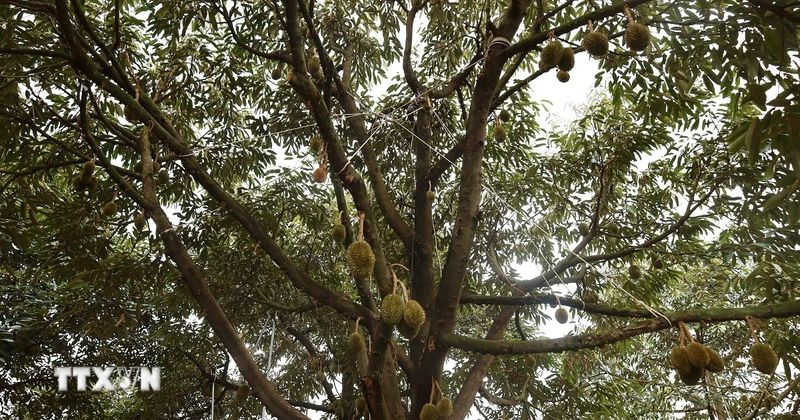
Đồng Nai kết nối doanh nghiệp, mở lối bền vững cho sầu riêng 🔗 MOI
Facebook Twitter Lưu bài viết Bản in Copy link Gần đây, cây sầu riêng đang trở thành cây trồng chủ lực mang lại thu nhập cao cho người dân xã Phú Trung, thành phố Đồng Nai. Tuy nhiên, trước yêu cầu ng
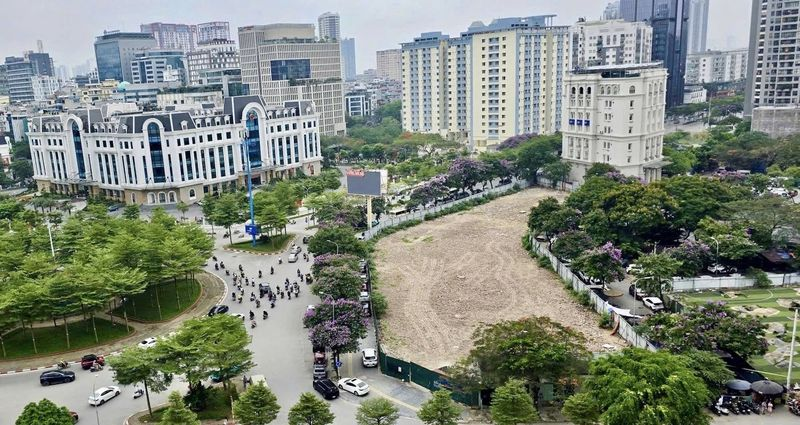
Toàn cảnh đất vàng hoang phí giữa Hà Nội, triệu tỷ bị chôn lấp, găm giữ 🔗 MOI
Lời toà soạn: Trong bối cảnh nền kinh tế cần tăng trưởng hai con số, hàng loạt khu đất vàng, dự án chậm triển khai, công trình dang dở trên khắp cả nước vẫn đang bị bỏ hoang, gây lãng phí nguồn lực kh
Chiến sự Ukraine ngày 1.537: Xung đột tiếp diễn giữa lệnh ngừng bắn, sắp đến hồi kết? 🔗 MOI
Lực lượng cứu hộ Ukraine tại một khu vực bị tập kích ở Zaporizhzhia giữa xung đột với Nga ẢNH: REUTERS Hãng Reuters ngày 10.5 dẫn lời giới chức Ukraine cáo buộc Nga tấn công bằng UAV và tham gia gần 1

Khơi thông các động lực tăng trưởng kinh tế Việt Nam 🔗 MOI
Pháp luật Nhờ sự phối hợp đồng bộ của chính sách tài khóa và tiền tệ trong việc thúc đẩy cầu trong nước, kinh tế Việt Nam năm 2025 phục hồi mạnh, với tăng trưởng vượt mục tiêu đề ra. Về ổn định kinh t
Vốn FDI thực hiện tại Việt Nam 4 tháng đầu năm ước đạt 7,4 tỷ USD 🔗 MOI
Tổng vốn đầu tư nước ngoài đăng ký vào Việt Nam 4 tháng đầu năm đạt 18,24 tỷ USD, tăng 32% so với cùng kỳ năm trước, trong dó vốn thực hiện ước đạt 7,4 tỷ USD, cao nhất trong 5 năm qua. Theo báo cáo t
Toàn cảnh đất vàng hoang phí giữa Hà Nội, triệu tỉ bị chôn lấp, găm giữ 🔗 MOI
Hà Nội đang tiến hành đợt tổng rà soát 341 dự án ngoài ngân sách có sử dụng đất nhưng chậm triển khai. Trong bức tranh đó, những điểm nóng hiện lên rõ nét cả ở khu vực ven đô lẫn lõi đô thị. Thống kê
[Video] Điện Kremlin đề nghị Armenia không ủng hộ lập trường bài Nga 🔗 MOI
Nga chỉ trích Armenia tạo “diễn đàn” cho phát biểu “bài Nga” Điện Kremlin yêu cầu Yerevan không theo lập trường bài Nga và đang chờ giải thích chính thức Tổng thống Ukraine V. Zelensky trước đó tại Ar
Phó Thủ tướng dự lễ động thổ Dự án Tổ hợp cáp treo kết hợp du lịch văn hóa lịch sử Điện Biên Phủ 🔗 MOI
(PLO)- Với tổng vốn đầu tư dự kiến 2.076 tỉ đồng, dự án Tổ hợp cáp treo tại Mường Phăng được kỳ vọng sẽ tạo cú hích cho ngành du lịch tỉnh Điện Biên. Ngày 10-5, tại xã Mường Phăng, tỉnh Điện Biên, Phó
Người đảng viên công giáo hơn 20 năm “gánh hai vai” 🔗 MOI
Video: Người đảng viên công giáo Trần Ngọc Cảnh hơn 20 năm “gánh hai vai”. Người cán bộ “miệng nói, tay làm” Những ngày này, trở lại xóm Tân Sơn 6, xã Văn Hiến, Nghệ An dễ dàng bắt gặp những tuyến đườ
Hoàng Anh Gia Lai đầu tư 5.000ha cà phê tại Lào 🔗 MOI
Ông Đoàn Nguyên Đức, Chủ tịch Tập đoàn Hoàng Anh Gia Lai và lãnh đạo tỉnh Champasak, Lào, tại buổi ký ghi nhớ hợp tác đầu tư - Ảnh: M.V. Ngày 10-5, Tập đoàn Hoàng Anh Gia Lai và lãnh đạo tỉnh Champasa
Năng lượng & Khoáng sản 🔗 MOI
Ngày 9/4, Ủy ban Thường vụ Quốc hội đã cho ý kiến về dự thảo Nghị quyết của Quốc hội về việc ban hành một số quy định về thuế bảo vệ môi trường, thuế giá trị gia tăng, thuế tiêu thụ đặc biệt đối v

Giá vàng hôm nay 11/5/2026 dự báo tăng, giá vàng SJC diễn biến lạ 🔗 MOI
Giá vàng thế giới hôm nay 11/5/2026 Mở cửa phiên đầu tuần trước, giá vàng giao ngay ở mức khoảng 4.623 USD/ounce. Thị trường vàng chịu áp lực giảm trong đầu tuần, dù rủi ro địa chính trị liên quan đến
Đại gia điện tái tạo chật vật: Nợ lớn, lãi vay cao, lợi nhuận phân hóa 🔗 MOI
Nơi báo lãi trăm tỷ, nơi lỗ gần nghìn tỷ vì gánh nợ CTCP Điện mặt trời Trung Nam Trà Vinh vừa công bố kết quả kinh doanh năm 2025 với lợi nhuận sau thuế gần 208 tỷ đồng, tăng đáng kể so với mức hơn 16
Tai nạn ô tô, xe máy trên quốc lộ 1, hai cháu nhỏ thương vong 🔗 MOI
Hiện trường vụ tai nạn - Ảnh: C.Q.C.N. Tối 10-5, một vụ tai nạn giao thông nghiêm trọng xảy ra trên quốc lộ 1, đoạn qua khu vực ngã tư Hàng Da (thôn Phong Niên Thượng, xã Thọ Phong, tỉnh Quảng Ng

Kiến tạo không gian phát triển mới cho kinh tế tập thể 🔗 MOI
Pháp luật Trong giai đoạn 2021-2025, dựa vào mục tiêu phát triển, điều kiện ngân sách và nhu cầu hỗ trợ, năng lực của các hợp tác xã, Thủ tướng Chính phủ đã ban hành Chương trình hỗ trợ phát triển kin
Tạp chí Kinh tế Sài Gòn 🔗 MOI
Kinh tế Sài Gòn giữ bản quyền nội dung của trang web thesaigontimes.vn. Không sử dụng lại nội dung trên trang này dưới mọi hình thức, trừ khi được Kinh tế Sài Gòn đồng ý bằng văn bản. Trang ngoài sẽ đ
Tạp chí Kinh tế Sài Gòn 🔗 MOI
Kinh tế Sài Gòn giữ bản quyền nội dung của trang web thesaigontimes.vn. Không sử dụng lại nội dung trên trang này dưới mọi hình thức, trừ khi được Kinh tế Sài Gòn đồng ý bằng văn bản. Trang ngoài sẽ đ

Khu Công nghiệp, Khu Kinh tế 🔗 MOI
Trước biến động giá năng lượng thế giới, Chính phủ đã chủ động điều hành linh hoạt các chính sách thuế, phí nhằm bình ổn giá trong nước và hỗ trợ đời sống nhân dân trong 4 tháng đầu năm 2026. Nằm tron
Tạp chí Kinh tế Sài Gòn 🔗 MOI
Kinh tế Sài Gòn giữ bản quyền nội dung của trang web thesaigontimes.vn. Không sử dụng lại nội dung trên trang này dưới mọi hình thức, trừ khi được Kinh tế Sài Gòn đồng ý bằng văn bản. Trang ngoài sẽ đ
Tạp chí Kinh tế Sài Gòn 🔗 MOI
Kinh tế Sài Gòn giữ bản quyền nội dung của trang web thesaigontimes.vn. Không sử dụng lại nội dung trên trang này dưới mọi hình thức, trừ khi được Kinh tế Sài Gòn đồng ý bằng văn bản. Trang ngoài sẽ đ
Cảnh báo rủi ro rơi vào hành vi trốn thuế 🔗 MOI
Không kê khai thuế, sử dụng hóa đơn bất hợp pháp… bị xem là trốn thuế Điều 45 luật Quản lý thuế năm 2025 quy định 10 hành vi bị xác định là trốn thuế , gồm: không đăng ký, kê khai thuế, nộp hồ sơ khai
Tổng thống Trump bác phản hồi của Iran về đề xuất chấm dứt xung đột Trung Đông 🔗 MOI
Facebook Twitter Lưu bài viết Bản in Copy link Ngày 10/5 (giờ địa phương), Tổng thống Donald Trump cho biết ông đã bác bỏ phản hồi của Iran đối với đề xuất của Mỹ nhằm chấm dứt xung đột tại Trung Đông
Iran cảnh báo Mỹ về nguy cơ leo thang căng thẳng tại vùng Vịnh 🔗 MOI
Chào mừng quý độc giả và thính giả đến với Bản tin Thế giới - chuyên mục podcast thời sự quốc tế hàng ngày trên Báo Điện tử VietnamPlus. Tại đây, chúng tôi cập nhật nhanh nhất những diễn biến nổi bật
177 ngày chống chọi với tử thần của người lính Ukraine giữa 'vùng chết' 🔗 MOI
Roman Mongold, 38 tuổi, bị bao vây giữa đống đổ nát của một nhà máy tại thành phố Vovchansk ở Kharkov, đông bắc Ukraine. Anh đói và mệt, đầu đau nhói do những chấn thương chưa được điều trị. Anh căng
Dàn sao sẽ biểu diễn ở lễ khai mạc World Cup 2026 🔗 MOI
Katy Perry tại concert ở Brazil tháng 9/2025. Ảnh: Katy Perry Theo The Athletic , mùa giải năm nay bắt đầu từ ngày 11/6, có ba lễ khai mạc tại ba quốc gia đồng đăng ca là Mexico, Mỹ và Canada. Mỗi chư
Giá vàng tuần này có thể tăng 🔗 MOI
Tuần trước, giá vàng thế giới mở cửa giao dịch ở mức 4.623 USD mỗi ounce, có lúc vượt trên mốc 4.700 USD nhờ hy vọng giảm leo thang căng thẳng Trung Đông, lợi suất trái phiếu kho bạc Mỹ giảm và đồng U

Chuyên đề Agribank 🔗 MOI
Trước áp lực thực thi Nghị định số 70/2025/NĐ-CP về hóa đơn điện tử và quản lý thuế, Agribank tổ chức hội nghị tập huấn toàn quốc, thống nhất quy trình hỗ trợ và giới thiệu gói giải pháp số dành riêng

TỔNG QUAN TỔNG QUAN KINH TẾ 🔗 MOI
Kinh tế Hoạt động điều hành chính sách tài khóa năm 2025 diễn ra trong bối cảnh tình hình kinh tế trong nước và quốc tế tiếp tục diễn biến phức tạp, căng thẳng thương mại toàn cầu gia tăng, đặc biệt l
Sun Group khởi công dự án cáp treo hơn 2.000 tỷ đồng ở Điện Biên Phủ 🔗 MOI
Với tổng vốn đầu tư dự kiến 2.076 tỷ đồng, dự án cáp treo tại Mường Phăng được kỳ vọng rút ngắn thời gian tiếp cận các điểm di tích và tạo cú hích cho du lịch Điện Biên. Lễ động thổ dự án tổ hợp
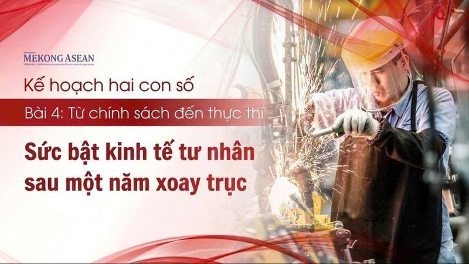
Sức bật của khu vực kinh tế tư nhân (Bài 4) 🔗 MOI
Tròn một năm kể từ khi Nghị quyết số 68-NQ/TW ngày 4/5/2025 của Bộ Chính trị được ban hành, khu vực kinh tế tư nhân đã có những chuyển biến rõ nét, thể hiện sự thay đổi từ nhận thức đến hành động tron

Tiếp nhận phản ánh kiến nghị của công dân 🔗 MOI
HỌ VÀ TÊN * EMAIL * SỐ ĐIỆN THOẠI * ĐỊA CHỈ * TIÊU ĐỀ * FILES ĐÍNH KÈM NỘI DUNG * RadEditor - HTML WYSIWYG Editor. MS Word-like content editing experience thanks to a rich set of formatting tools, dro
Đề xuất tăng thêm 4.460 tỷ đồng để triển khai dự án đường Vành đai 3,5 🔗 MOI
UBND TP Hà Nội vừa có tờ trình gửi HĐND thành phố đề nghị ban hành Nghị quyết Phê duyệt điều chỉnh chủ trương đầu tư Dự án xây dựng đường Vành đai 3,5 đoạn từ Phúc La – Văn Phú đến cao tốc Pháp Vân –
Hình hài siêu dự án 27 tỷ USD chưa từng có tại Việt Nam có sự góp mặt của 3 “ông lớn” Đại Quang Minh - THACO - Hòa Phát 🔗 MOI
TIN MỚI UBND TP Hà Nội vừa có tờ trình gửi HĐND thành phố về việc phê duyệt chủ trương đầu tư dự án đầu tư trục đại lộ cảnh quan sông Hồng. Theo đó, dự án có quy mô sử dụng đất hơn 11.400 ha, gồm các
Nhật Bản đẩy mạnh AI, tự động hóa trong phòng thí nghiệm 🔗 MOI
Theo hãng tin Kyodo, bước đi này nhằm tiến tới tự động hóa gần như toàn bộ quy trình nghiên cứu. Cơ sở này có tên là Trung tâm Đổi mới Robot thuộc Viện Khoa học Tokyo. Nơi này không có nhân viên con n
Tranh cãi việc VĐV chuyển giới giành ba HC vàng điền kinh nữ ở Mỹ 🔗 MOI
Giải diễn ra ngày 9/5 tại trường Yorba Linda, Orange, California trở thành tâm điểm tranh luận xoay quanh vấn đề VĐV chuyển giới tham gia thể thao nữ. Hernandez, học sinh năm cuối của trường Jurupa Va
Kho dự trữ dầu toàn cầu giảm với tốc độ kỷ lục 🔗 MOI
TIN MỚI Xung đột tại Iran đang khiến thế giới tiêu thụ lượng dầu dự trữ với tốc độ nhanh kỷ lục, làm cạn kiệt "vùng đệm" vốn có nhiệm vụ bảo vệ nền kinh tế toàn cầu trước các cú sốc nguồn cung. Việc c
Cảnh báo khẩn: Hàng loạt web "lậu" đóng cửa, doanh nghiệp đối diện án phạt nặng nếu tiếp tục dùng phần mềm không bản quyền 🔗 MOI
TIN MỚI Thị trường nội dung số ghi nhận biến động lớn ngay sau khi Công điện số 38/CĐ-TTg của Thủ tướng Chính phủ có hiệu lực từ ngày 05/05/2026. Theo đó, các cơ quan chức năng triển khai đợt kiểm tra

Chính phủ với doanh nghiệp 🔗 MOI
20/03/2026 (Chinhphu.vn) - Chính phủ ban hành Nghị quyết số 11/2026/NQ-CP về chi phí tiền lương Ngân hàng thương mại TNHH một thành viên Xây dựng Việt Nam, Ngân... 04/03/2026 (Chinhphu.vn) - Chính phủ
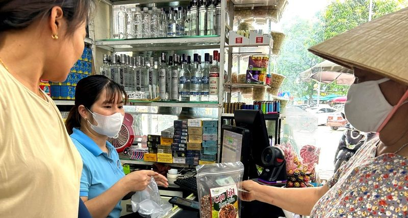
Doanh thu vượt 3 tỷ đồng, hộ kinh doanh phải đổi cách tính thuế ngay? 🔗 MOI
Ông N.V.H, một hộ kinh doanh ở Tây Ninh, cho biết, hộ kinh doanh của ông được đăng ký từ tháng 10/2025, có doanh thu hơn 1,5 tỷ đồng và đã kê khai, nộp thuế giá trị gia tăng, thuế thu nhập cá nhân tro
4 mẫu xe SUV 7 chỗ tầm giá 1,5 tỷ đồng đáng mua nhất thị trường Việt 🔗 MOI
Không còn bó hẹp trong nhóm SUV cỡ D truyền thống, tầm giá khoảng 1,5 tỷ đồng tại thị trường Việt Nam hiện nay đã mở rộng đáng kể. Người mua không chỉ tiếp cận được các mẫu xe SUV 7 chỗ khung gầm rời
Eo biển Hormuz đình trệ, kênh đào Panama trở nên sôi động 🔗 MOI
Facebook Twitter Lưu bài viết Bản in Copy link Cuộc chiến tại Iran đã đẩy doanh thu của kênh đào Panama tăng tới 15% do tình trạng gián đoạn các luồng thương mại toàn cầu. Ban quản lý tuyến đường thủy
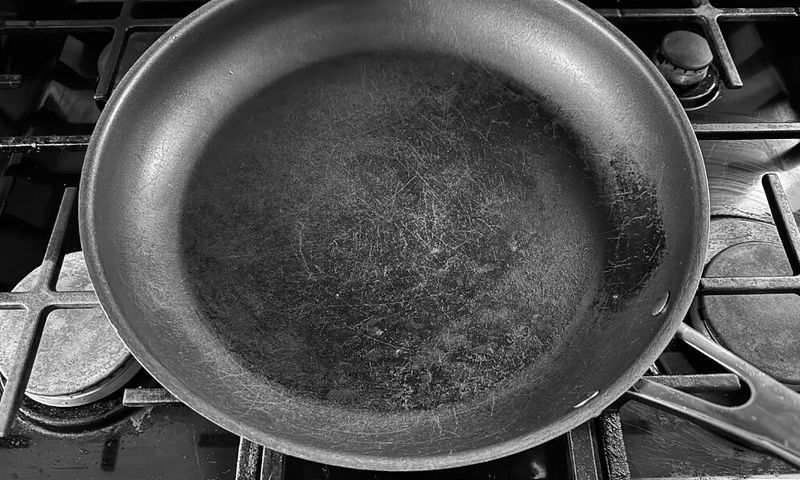
Những sai lầm khi dùng chảo chống dính gây nhiễm độc nhựa, hóa chất vĩnh cửu 🔗 MOI
Một nghiên cứu chung của Đại học Flinders và Đại học Newcastle (Australia) công bố trên tạp chí khoa học Science of the Total Environment mới đây chỉ ra rằng mỗi khi sử dụng chảo chống dính đã bị hư h
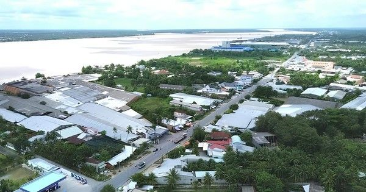
Hàng loạt doanh nghiệp thuê đất rồi bỏ hoang 🔗 MOI
Thanh tra tỉnh Vĩnh Long vừa ban hành kết luận thanh tra, chỉ ra nhiều vi phạm nghiêm trọng trong công tác phòng chống lãng phí và quản lý sử dụng đất tại Ban Quản lý Dự án Phát triển hạ tầng Khu Kinh

Kiểm soát lạm phát trước những "biến số" cuối năm 🔗 MOI
Tài chính Tại Nghị quyết số 86/NQ-CP ngày 4/11/2025 về triển khai nhiệm vụ trọng tâm những tháng cuối năm 2025, Chính phủ tiếp tục yêu cầu về kiểm soát lạm phát, giữ vững ổn định kinh tế vĩ mô. Trong

Trẻ sinh ra di truyền giang mai từ mẹ có điều trị được không? 🔗 MOI
MC Nguyên Khang chia sẻ trong Điều ước của mẹ: Mối quan hệ giữa con trai và mẹ rất đặc biệt 🔗 MOI
Từ phải qua: Vợ chồng nghệ sĩ Thanh Duy - Kha Ly, Dương Cẩm Lynh, ca sĩ Duyên Quỳnh trong buổi ra mắt mùa 2 Điều ước của mẹ - Ảnh: HOÀNG LÊ Điều ước của mẹ là chương trình truyền hình thực tế với đối
Cô học sinh Nhật Bản khiến Trung Quốc vất vả ở chung kết bóng bàn thế giới 🔗 MOI
Ngôi sao 17 tuổi Miwa Harimoto của tuyển Nhật Bản tỏa sáng rực rỡ - Ảnh: WTT Giải vô địch đồng đội thế giới là đấu trường chứng kiến rõ rệt nhất sự thống trị của người Trung Quốc với môn bóng bàn. Giả
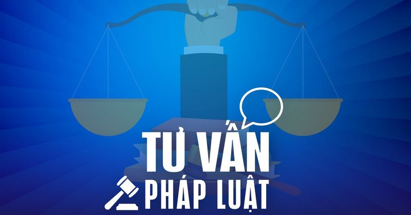
Đất ruộng bà nội sang tên cho cháu có phải chịu thuế không? 🔗 MOI
- Luật sư Tào Văn Dũng (Đoàn Luật sư TP.HCM) trả lời: Luật sư Tào Văn Dũng Theo quy định thì nhà đất nhận thừa kế hoặc thu nhập từ quà tặng là bất động sản sẽ phải nộp thuế thu nhập cá nhân và lệ phí
Khởi tố mẹ ruột và 'cha dượng' bạo hành khiến bé trai 2 tuổi nguy kịch 🔗 MOI
Nguyễn Thị Thanh Trúc và Danh Chơn - bị khởi tố vì bạo hành bé trai 2 tuổi là con ruột Trúc - Ảnh: C.A. Ngày 10-5, Cơ quan cảnh sát điều tra Công an TP.HCM cho biết đã khởi tố vụ án, khởi tố bị can, t

Huy động tài chính xanh hướng tới mục tiêu phát triển bền vững 🔗 MOI
Pháp luật Chuyển đổi năng lượng xanh đã trở thành xu thế toàn cầu mang tính bắt buộc, gắn liền với mục tiêu Net Zero và yêu cầu cạnh tranh trong chuỗi cung ứng quốc tế. Trong bối cảnh đó, doanh nghiệp

Tạp chí Kinh tế Tài chính kỳ 3 tháng 3/2026 🔗 MOI

Tạp chí Kinh tế Tài chính kỳ 1 tháng 4/2026 🔗 MOI

Tạp chí Kinh tế Tài chính kỳ 2 tháng 4/2026 🔗 MOI

Góc chuyên gia & nhà quản lý 🔗 MOI
Trước biến động giá năng lượng thế giới, Chính phủ đã chủ động điều hành linh hoạt các chính sách thuế, phí nhằm bình ổn giá trong nước và hỗ trợ đời sống nhân dân trong 4 tháng đầu năm 2026. Nằm tron

Bảo vệ nhà đầu tư trước “cơn sốt” tài sản mã hóa 🔗 MOI
Chứng khoán Trong bối cảnh Việt Nam đang từng bước xây dựng khung pháp lý và chuẩn bị thí điểm thị trường tài sản mã hóa theo Nghị quyết số 05/2025/NQ-CP của Chính phủ, bài toán về an toàn hệ thống, m

Kỷ niệm 51 năm Ngày Giải phóng miền Nam, thống nhất đất nước: Tự chủ chiến lược, kiến tạo thịnh vượng 🔗 MOI
Kinh tế Trong bối cảnh cạnh tranh thu hút đầu tư công nghệ ngày càng quyết liệt, Việt Nam đang chủ động mở cánh cửa ra thế giới để đón các “đại bàng công nghệ”, coi đây là động lực quan trọng để chuyể

Hoạt động của Lãnh đạo Bộ Tài chính 🔗 MOI
Trước biến động giá năng lượng thế giới, Chính phủ đã chủ động điều hành linh hoạt các chính sách thuế, phí nhằm bình ổn giá trong nước và hỗ trợ đời sống nhân dân trong 4 tháng đầu năm 2026. Nằm tron

Nước CHXHCN Việt Nam 🔗 MOI
© Cổng Thông tin điện tử Chính phủ Tổng Giám đốc: Nguyễn Hồng Sâm Trụ sở: 16 Lê Hồng Phong - Ba Đình - Hà Nội. Điện thoại: Văn phòng: 080 43162; Fax: 080.48924 Email: thongtinchinhphu@chinhphu.vn Bản
“Lá chắn” ổn định vĩ mô - nền móng cho tăng trưởng cao 🔗 MOI
Hoạt động sản xuất tại một nhà máy ở TPHCM. Ảnh: HOÀNG HÙNG Trong bối cảnh kinh tế thế giới liên tục biến động, giữ vững ổn định kinh tế vĩ mô đang trở thành yêu cầu cấp thiết. Đây không chỉ là “lá ch
Nàng hậu Việt lên chức giám đốc ở tuổi 23 🔗 MOI
Chiều 10.5, sự kiện khởi động cuộc thi Hoa hậu & Nam vương Du lịch Việt Nam 2026 diễn ra tại TP.HCM, thu hút sự quan tâm của nhiều sao Việt như Hoa hậu Võ Cao Kỳ Duyên, Á hậu Trịnh Mỹ Anh … Trịnh Mỹ A
Xe bán chạy nhất mọi thời đại của Toyota ra phiên bản đặc biệt 🔗 MOI
Toyota vừa giới thiệu loạt phiên bản kỷ niệm 60 năm dành cho dòng Corolla tại thị trường Đài Loan (Trung Quốc), trước thời điểm thế hệ mới của mẫu xe này dự kiến ra mắt với hàng loạt thay đổi lớn về t
Ai phải gắn nhãn nhận biết nội dung do AI tạo ra? 🔗 MOI
Chính phủ đã ban hành Nghị định 142/2026, có hiệu lực từ ngày 1-5, trong đó quy định chi tiết việc thông báo và gắn nhãn đối với nội dung do trí tuệ nhân tạo (AI) tạo ra hoặc chỉnh sửa tại Luật Trí tu
Ẩn họa từ những mỏ đá không rào chắn ở Đồng Nai 🔗 MOI
Cụm mỏ đá Bình Hóa - Tân Hạnh rộng khoảng 60 ha ở phường Biên Hòa, từng là một trong những khu khai thác đá lớn nhất trung tâm TP Đồng Nai. Khu vực này trước đây có 9 mỏ đá hoạt động, dừng khai thác t
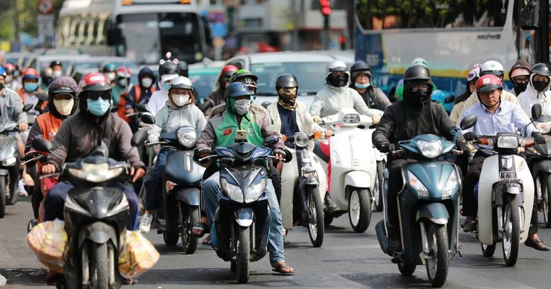
Thời tiết dị thường, El Nino mạnh 'gõ cửa' 🔗 MOI
Nam bộ nóng hầm hập, miền Bắc mưa lũ Những trận mưa đầu tháng 5 khiến nhiều người dân TP.HCM thở phào, nghĩ rằng giai đoạn cao điểm nắng nóng đã kết thúc. Tuy nhiên, trong những ngày cuối tuần vừa qua
Tiếp sức học sinh xã đảo đến trường 🔗 MOI
Là xã đảo duy nhất của Gia Lai , cách đất liền khoảng 24 km, hành trình đi tìm con chữ của học sinh (HS) trên đảo Nhơn Châu đầy gian nan. Vượt biển đến trường Hiện trên đảo, hệ thống giáo dục chỉ dừng
Mỹ khẳng định đủ năng lực ứng phó ổ dịch virus Hanta trên tàu du lịch 🔗 MOI
Facebook Twitter Lưu bài viết Bản in Copy link Theo phóng viên TTXVN tại Washington, quan chức y tế hàng đầu của nước Mỹ ngày 10/5 (giờ địa phương) đã bác bỏ những chỉ trích từ các quan chức y tế công
Danh hài Vân Sơn tiết lộ người vợ 'giấu kín' suốt 36 năm 🔗 MOI
Không dại gì đánh đổi cái tên Vân Sơn! Nghệ sĩ Vân Sơn. - Mất 25 năm cho sự trở lại với điện ảnh, nhiều người hẳn tò mò vì sao Vân Sơn khó tính và kén chọn đến thế? Một cách thẳng thắn là tôi rất kén
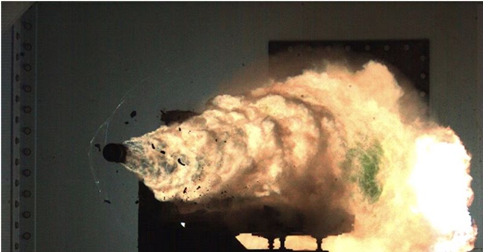
Siêu pháo hồi sinh của Mỹ có thể thay thế tên lửa? 🔗 MOI
Mặc dù những vũ khí khổng lồ nhất trong số này đã không còn được sử dụng và bị tên lửa thay thế nhưng Lục quân và Hải quân Mỹ vẫn tiếp tục tìm cách đưa chúng hoạt động trở lại dù nhiều lần thất bại. P
Bộ GD-ĐT chỉ rõ 3 sai lầm khi thí sinh đăng ký nguyện vọng xét tuyển đại học 🔗 MOI
GS Nguyễn Tiến Thảo, Vụ trưởng Vụ Giáo dục Đại học (Bộ GD-ĐT) cho hay, ở mỗi mùa tuyển sinh đại học đều có không ít những sai lầm của các thí sinh. Theo Bộ GD-ĐT, ngoài những sai lầm hy hữu tưởng khôn
Phòng chống bạo hành trẻ em: Cần hệ thống ‘tai mắt xã hội’ 🔗 MOI
Mới đây, từ trường hợp một bé trai 2 tuổi nhập viện với nhiều chấn thương do bị mẹ ruột và người tình bạo hành tại TP.HCM, đến bé gái 4 tuổi tử vong trong căn phòng trọ sau thời gian dài bị đánh đập t
Sắp xếp thôn, tổ dân phố: Bài toán vĩ mô và những đôi vai tuổi xế chiều 🔗 MOI
Bài toán đó là làm sao để sự tinh gọn ấy không trở thành gánh nặng quá sức đối với những cán bộ chủ chốt của thôn, tổ - những mái đầu bạc ở tuổi xế chiều? Nghịch lý dưới chân nấc thang chung cư cũ The
Ngành sản xuất bo mạch chủ lao đao vì AI 🔗 MOI
Tình trạng khan hiếm linh kiện cho máy tính cá nhân đang ngày càng trầm trọng, nhất là khi những nhà sản xuất chip như Nvidia, Intel và AMD giảm sản lượng chip cho thị trường tiêu dùng để tập trung và
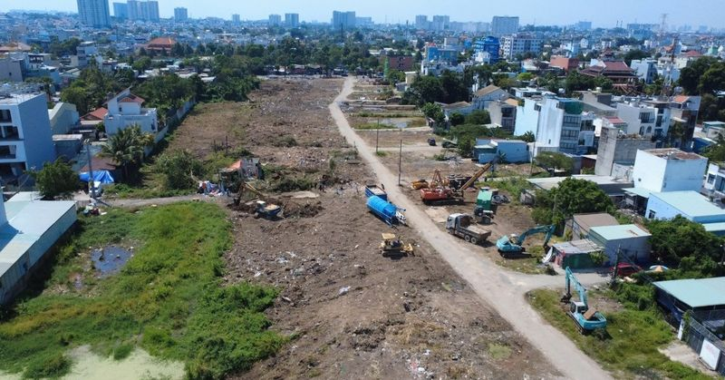
2,7km Vành đai 2 TPHCM 'thức giấc', công trường rầm rộ chuẩn bị tái thi công 🔗 MOI
Ngày 10/5, ghi nhận tại khu vực công trường đoạn 3 Vành đai 2 TPHCM, bầu không khí im lìm trước đây đã được thay thế bằng nhịp độ thi công nhộn nhịp hơn. Trên công trường, đoạn từ nút giao Phạm Văn Đồ
Xung đột Mỹ - Iran còn nhiều biến số 🔗 MOI
Cảnh báo của Iran Hôm qua, hãng thông tấn Tasnim dẫn lời người phát ngôn quân đội Iran Mohammad Akraminia cảnh báo các tàu từ những nước tuân theo lệnh cấm vận của Mỹ đối với Iran từ nay sẽ gặp khó kh
Shakira tái xuất với ca khúc chủ đề World Cup 2026 🔗 MOI
16 năm sau, ngày 7-5-2026, Shakira đăng tải đoạn video ngắn về "Dai Dai" - ca khúc đồng hành cùng World Cup 2026 diễn ra tại Mỹ, Mexico và Canada. "Dai Dai" có sự góp giọng của Burna Boy, dự kiến phát
CLB Thanh Hóa chưa "thoát hiểm" 🔗 MOI
Trên sân nhà, CLB Thanh Hóa tiếp đón đội Hà Nội với áp lực không nhỏ. Đại diện thủ đô đang có phong độ cao với chuỗi 4 chiến thắng liên tiếp. Tuy nhiên, trong thế trận mà CLB Hà Nội vượt trội cả về tỉ
Xuất hiện video hiện trường vụ máy bay hút người vào động cơ tại Mỹ 🔗 MOI
Điểm nóng xung đột ngày 11-5: Nga dựng thêm vành đai phòng không quanh Moscow 🔗 MOI
Nga đang nhanh chóng củng cố mạng lưới phòng không đa tầng quanh Moscow, triển khai hơn 100 hệ thống phòng không bao gồm các tổ hợp Pantsir, S-300 và S-400 để bảo vệ thủ đô trước các cuộc tấn công bằn

ABBank hoàn thành 1/3 kế hoạch lợi nhuận năm sau 3 tháng 🔗 MOI
Nhờ thu ngoài lãi bứt phá, tổng thu nhập hoạt động tăng hơn gấp đôi, ABBank báo lãi trước thuế 1.500 tỷ đồng trong quý 1/2026, tỷ lệ nợ xấu giảm xuống còn 0,82%. Ngân hàng ABBank. Ảnh: Thu Trang/Mekon

Huy động nguồn lực cho tăng trưởng xanh 🔗 MOI
Pháp luật Bài viết phân tích tiềm năng, thực trạng và định hướng phát triển các mô hình du lịch biển tại Việt Nam nhằm hướng tới một nền kinh tế biển xanh, bền vững. Với đường bờ biển dài hơn 3.260 km

Tự chủ an ninh năng lượng quốc gia 🔗 MOI
Kinh tế Trong bối cảnh những cú sốc năng lượng toàn cầu ngày càng lan rộng và khó dự báo, bảo đảm an ninh năng lượng đã trở thành vấn đề sống còn đối với mỗi quốc gia. Với Việt Nam, Nghị quyết số 70-N

Tham vấn chính sách 🔗 MOI
08/05/2026 (Chinhphu.vn) - Quỹ đào tạo nhân lực của doanh nghiệp do doanh nghiệp lựa chọn, tự chủ, tự quyết định thành lập nhằm bảo đảm các hoạt động giáo dục,... 08/05/2026 (Chinhphu.vn) - Bộ Tài chí
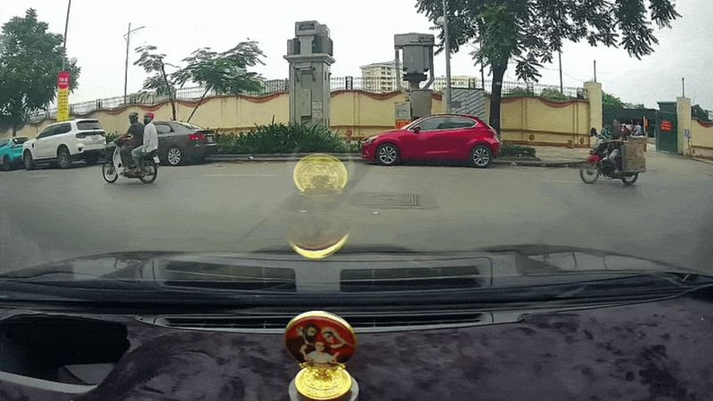
Clip: Xe máy phóng nhanh đâm vỡ kính lái ô tô 🔗 MOI
Vụ tai nạn xảy ra hôm 9/5 tại đường Lê Trọng Tấn, Hà Nội. Theo camera hành trình của phương tiện gặp nạn, tài xế điều khiển ô tô từ ngõ ra đường lớn với tốc độ chậm trước khi chuyển hướng rẽ trái ở nơ
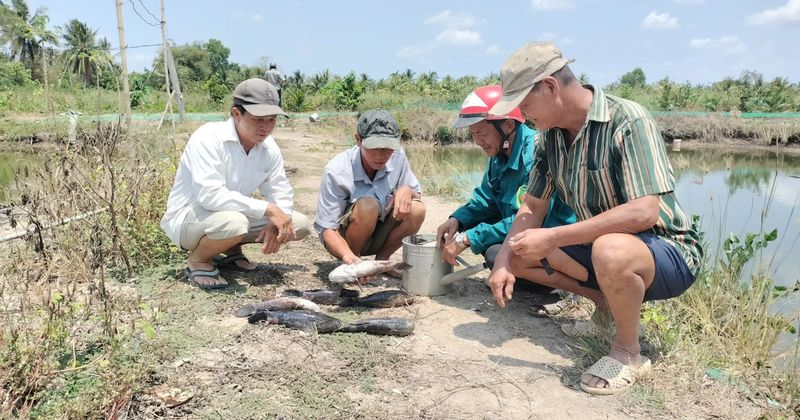
Cà Mau ấn định mốc thời gian bồi thường vụ cá chết do nhiễm mặn thi công sân bay 🔗 MOI
UBND tỉnh Cà Mau vừa có thông báo kết luận của ông Lê Văn Sử - Phó Chủ tịch UBND tỉnh về rà soát, khắc phục sản xuất do ảnh hưởng từ việc thi công dự án mở rộng sân bay Cà Mau. Theo đó, chủ đầu tư, cá
Tin tức đặc biệt trên báo in Thanh Niên 11.5.2026 🔗 MOI
Khơi thông nguồn lực khổng lồ từ bất động sản Nhiều dự án BĐS bị tồn đọng nhiều năm có cơ hội được hồi sinh nhờ Nghị quyết 29/2026 và Nghị định 147/2026 của Chính phủ ẢNH: ĐÌNH SƠN Chính phủ vừa ban h
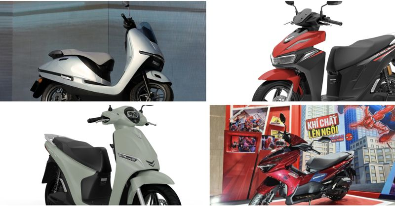
Thị trường xe máy Việt nóng lên, nhiều mẫu mới gia nhập cuộc đua 🔗 MOI
Thị trường xe máy Việt Nam trong 5 tháng đầu năm 2026 ghi nhận dấu hiệu phục hồi sau giai đoạn chững lại kéo dài. Theo số liệu mới nhất từ Cục Thống kê (Bộ Tài chính), riêng tháng 4/2026, các doanh ng
Hệ lụy từ việc đua nhau sản xuất theo phong trào 🔗 MOI
Những ngày gần đây, dọc các tuyến giao thông ở ĐBSCL, hình ảnh nhà vườn mang sầu riêng ra ven đường đổ thành đống rồi chờ đợi người tiêu dùng "giải cứu" đã trở nên quen thuộc. Đây là giải pháp tình th
Đi bộ mỗi ngày nhưng huyết áp, đường huyết vẫn cao vì 4 sai lầm này 🔗 MOI
Có người duy trì thói quen đi bộ trong thời gian dài nhưng huyết áp hoặc đường huyết vẫn chưa cải thiện rõ vì mắc một số sai lầm phổ biến dưới đây. Đi quá chậm Không phải cứ chỉ cần đi bộ vài vòng qua

Xoắn dây tinh và thời gian vàng cấp cứu 🔗 MOI

Bộ Tài chính đồng hành cùng doanh nghiệp nhỏ và vừa trên hành trình chuyển đổi kép 🔗 MOI
Chuyển đổi số Trong bối cảnh tiêu chuẩn ESG, yêu cầu Net Zero và sức ép cạnh tranh toàn cầu ngày càng gia tăng, phần lớn doanh nghiệp Việt Nam, đặc biệt là doanh nghiệp nhỏ và vừa đang đối mặt với kho
Thi tốt nghiệp THPT 2026: Chỉ hơn 28% thí sinh đăng ký môn ngoại ngữ 🔗 MOI
Khoa học xã hội vẫn áp đảo Các môn khoa học xã hội (KHXH) tiếp tục chiếm ưu thế áp đảo khi lịch sử tăng từ 42,85% năm 2025 lên 46,64% năm 2026, còn giáo dục kinh tế và pháp luật tăng từ 21,22% lên 23,
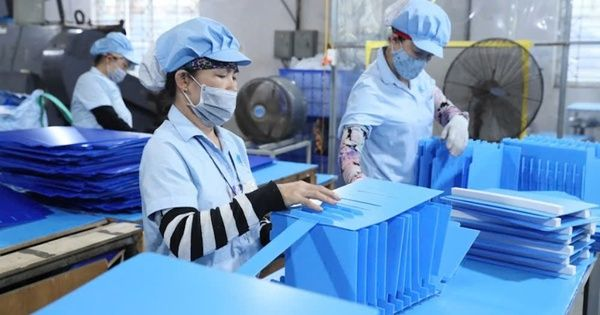
Tập trung hỗ trợ doanh nghiệp nhỏ và vừa 🔗 MOI
Dựa trên các yếu tố: dòng tiền, phương án sản xuất - kinh doanh, dữ liệu doanh nghiệpvà uy tín tín dụng. Bộ Tài chính đang xây dựng Luật Hỗ trợ doanh nghiệp (DN) nhỏ và vừa (sửa đổi) để thay thế luật
Neville: 'Hủy bàn gỡ của West Ham là khoảnh khắc lớn nhất lịch sử VAR' 🔗 MOI
Trên sân London ngày 10/5, Leandro Trossard mở tỷ số cho Arsenal ở phút 83. Đến phút bù thứ năm, Callum Wilson sút bóng qua vạch vôi, tưởng như đã giúp West Ham gỡ hòa 1-1. Trọng tài chính Chris Kavan
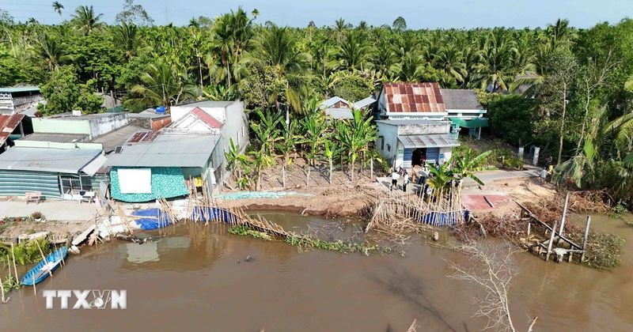
Tìm giải pháp hữu hiệu ứng phó sạt lở bờ sông, bờ kênh 🔗 MOI
Facebook Twitter Lưu bài viết Bản in Copy link Biến đổi khí hậu khó lường và cực đoan và thực tế việc quy hoạch, phát triển đô thị, giao thông hiện nay đã gây hệ lụy không nhỏ đến tình hình sạt lở bờ
Quan hệ Việt Nam - Ấn Độ: ‘Hình mẫu’ đối tác cùng phát triển 🔗 MOI
Quan hệ Việt Nam - Ấn Độ: ‘Hình mẫu’ đối tác cùng phát triển 11/05/2026 05:30 ThS LỤC MINH TUẤN (Giảng viên chuyên ngành Quan hệ Quốc tế, từng giảng dạy ở ĐH Quốc gia TP.HCM) (PLO)- Chuyến thăm của Tổ
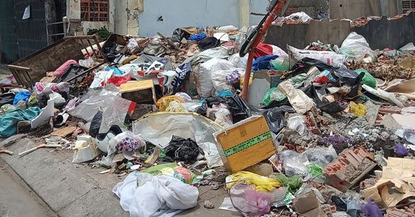
"Thưởng nóng", "phạt nguội" để giảm đổ rác bừa bãi 🔗 MOI
Tình trạng này gây mất mỹ quan đô thị, ô nhiễm môi trường và nguy cơ dịch bệnh. Đáng nói là nhiều người ngang nhiên đổ rác ngay dưới biển cấm. Dù chính quyền đã xử lý nhiều trường hợp vi phạm nhưng tì
Noble West Lake Ha Noi: 12 tòa tháp 40 tầng thi công xuyên đêm, "đại công trường" lớn bậc nhất Tây Hồ Tây lộ diện 🔗 MOI
TIN MỚI Ô đất CT5-6: Vì sao giới đầu tư gọi là "đất vàng cuối cùng"? Được Sunshine Group phát triển với tầm nhìn trở thành tổ hợp Branded Residences số 1 Việt Nam, Noble West Lake Ha Noi tọa lạc tại ô
Thủ môn David Raya giành "Găng tay vàng" thứ ba trong sự nghiệp 🔗 MOI
Màn trình diễn ổn định của David Raya trong khung thành là một trong những yếu tố quan trọng giúp Arsenal duy trì vị thế ứng viên hàng đầu cho chức vô địch Premier League mùa này. Thủ môn người Tây Ba
Phát huy vai trò công tác chính trị, tư tưởng 🔗 MOI
Quy định 19 nêu rõ: Công tác chính trị, tư tưởng là nhiệm vụ quan trọng hàng đầu trong công tác xây dựng Đảng; phải giữ vững nguyên tắc và không ngừng đổi mới, sáng tạo, nâng cao hiệu lực, hiệu quả, b
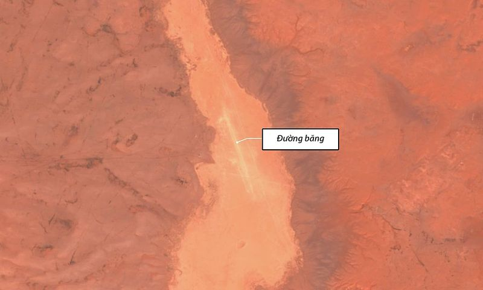
Israel có thể đã bí mật lập căn cứ ở Iraq trước khi tấn công Iran 🔗 MOI
Báo Wall Street Journal ngày 9/5 dẫn lời các quan chức Mỹ giấu tên cho biết Israel đã xây dựng một tiền đồn ở sa mạc trên lãnh thổ Iraq ngay trước khi xung đột Trung Đông bùng phát, nhằm hỗ trợ các cu

Hiểu đúng thí điểm vùng phát thải thấp từ 1-7: Không cấm hết xe máy xăng như lời đồn 🔗 MOI
Chi tiết khu vực dự kiến thí điểm vùng phát thải thấp tại Hà Nội từ ngày 1-7-2026 - Ảnh: VTV Từ ngày 1-7, Hà Nội bắt đầu triển khai thí điểm vùng phát thải thấp (Low Emission Zone - LEZ) tại 9 phường
Đà Nẵng đề xuất hỗ trợ 100.000 đồng mỗi ca trực cho người trực đêm tại các bãi biển 🔗 MOI
Du khách khiêu vũ đêm trên khu vực biển Mỹ Khê, Đà Nẵng - Ảnh: TRƯỜNG TRUNG Ngày 10-5, Sở Văn hóa, Thể thao và Du lịch TP Đà Nẵng cho biết đang tổ chức lấy ý kiến góp ý đối với dự thảo nghị quyết của

quản lý ngân sách hiệu quả, phục vụ chính quyền địa phương 2 cấp 🔗 MOI
Tài chính Không chỉ tinh gọn, sắp xếp bộ máy và kịp thời tham mưu, ban hành, triển khai các văn bản hướng dẫn về kế toán phục vụ mô hình chính quyền địa phương 2 cấp, tham gia các đoàn công tác cùng B
Lịch trực tiếp tứ kết U17 nữ châu Á 2026: Việt Nam đấu Úc 🔗 MOI
Lịch trực tiếp tứ kết U17 nữ châu Á 2026: Việt Nam đấu Úc - Đồ họa: AN BÌNH Vòng tứ kết U17 nữ châu Á 2026 sẽ diễn trong ngày 11-5 với các trận đấu: Nhật Bản - Hàn Quốc (14h), Việt Nam - Úc (14h), Tri
U17 Việt Nam tấn công chớp nhoáng, ghi bàn vào lưới Hàn Quốc 🔗 MOI
Bàn thắng của Sỹ Bách không thể mang về chiến thắng cho U17 Việt Nam - Video: TV360 Khuya 10-5, U17 Việt Nam chạm trán U17 Hàn Quốc ở lượt trận thứ hai bảng C - Giải vô địch bóng đá U17 châu Á 2026. T
Đánh bại Real Madrid, Barcelona vô địch La Liga 🔗 MOI
Barcelona nâng cao chiếc cúp vô địch La Liga sau chiến thắng trước đại kình địch Real Madrid - Ảnh: AP Chiến thắng gần như nằm trong tay Barcelona ngay từ trước trận, khi họ sở hữu nhiều lợi thế. Ngoà
Những đơn hàng tri ân bé nhỏ, ấm áp 🔗 MOI
Đơn hàng của bạn Yến Nhi (TP.HCM) gửi những vật dụng nhu yếu phẩm kèm lá thư tay đến Trung tâm Điều dưỡng thương binh Nghệ An - Ảnh: Facebook trung tâm Cứ vài phút, điện thoại của thành viên tổ truyền
Quan chức Iran cảnh báo sự kiềm chế của Tehran ‘đã chấm dứt’ 🔗 MOI
Một phụ nữ Iran đi ngang qua một nhà thờ Hồi giáo có treo hình ảnh Lãnh tụ tối cao Mojtaba Khamenei tại thủ đô Tehran ngày 9-5 - Ảnh: AFP Viết trên mạng xã hội X, ông Ebrahim Rezaei cảnh báo bất kỳ hà
Chợ 100 năm tuổi ở TP.HCM ‘thay áo mới’ dịp 50 năm thành phố mang tên Bác 🔗 MOI
Hình ảnh chợ Tân Định lên đèn rực rỡ trong màu áo mới Gần 10 ngày qua, người dân TP.HCM khi đi trên đường Hai Bà Trưng (phường Tân Định) ngang qua chợ Tân Định sẽ thấy một diện mạo mới hoàn toàn. Đó l
Dự kiến từ quý 3-2027 sẽ bàn giao mốc giải phóng mặt bằng dự án đường sắt tốc độ cao Bắc - Nam 🔗 MOI
Hiện nay dự án đường sắt tốc độ cao Bắc - Nam đang ở bước lựa chọn tư vấn lập báo cáo nghiên cứu khả thi - Ảnh minh họa: AI Trong văn bản gửi Sở Xây dựng TP.HCM, Ban Quản lý dự án Thăng Long cho biết

Ấn phẩm 🔗 MOI
Tổng Biên tập: TS. Phạm Thu Phong Phó Tổng Biên tập: TS. Đỗ Văn Hải, TS.

Đổi mới công tác xây dựng và thi hành pháp luật: Dấu ấn 1 năm thực hiện Nghị quyết số 66-NQ/TW 🔗 MOI
Tài chính Trong tiến trình phát triển đất nước, cải cách thể chế luôn được xác định là khâu đột phá để khơi thông nguồn lực và nâng cao năng lực cạnh tranh quốc gia. Trên nền tảng những chuyển động mạ

Báo cáo tài chính doanh nghiệp 🔗 MOI
Quý 1/2026, VNG báo lãi sau thuế 125 tỷ đồng, trong khi cùng kỳ năm trước lỗ 15 tỷ đồng. Đây là mức lãi theo quý cao nhất mà VNG ghi nhận kể từ quý 2/2021..
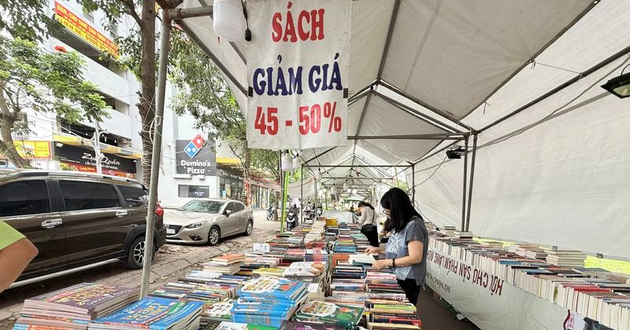
Vạch trần 'ma trận' sách lậu đội lốt hội chợ sách cũ 🔗 MOI
Mục sở thị ma trận sách lậu Theo chân đại diện NXB Kim Đồng trong vai những khách hàng tìm mua sách, chúng tôi lạc vào một "ma trận" sách lậu quy mô lớn tại khu vực phố Văn Tân (phường Hoàng Liệt, TP
Thêm cuộc gọi, giảm nỗi đau với trẻ bị bạo hành 🔗 MOI
Bé N.G.K. (2 tuổi, ở TPHCM) - em bé bị mẹ ruột và cha dượng bạo hành - có đôi mắt hai mí rất sáng. Ánh nhìn ấy xoáy sâu vào chúng tôi - những người xa lạ, khi cơ thể em co cứng lại như một phản xạ tự
'Mái nhà chung' đang khoác áo mới 🔗 MOI
Hôm nay (11-5), MTTQ Việt Nam bước vào phiên trù bị để chuẩn bị chu đáo cho phiên khai mạc Đại hội đại biểu toàn quốc lần thứ XI. Không chỉ là sự kiện chính trị , Đại hội XI MTTQ Việt Nam còn là phép
'Bước chân vào đời' tập 34: Hưng nhận làm chồng Trang, chúc mừng cô sắp làm mẹ 🔗 MOI
Trong Bước chân vào đời tập 34 lên sóng tối 11/5, Hưng (Trung Đức) biết Trang (Ngọc Thuỷ) mang bầu nên luôn động viên cô "sai thì sửa, chửa thì đẻ" và nhận mình là phao cứu sinh. Trang nói Hưng cứ nhậ
Luis Enrique đàm phán với PSG giữa tin đồn gia nhập MU 🔗 MOI
(PLO)- Luis Enrique chuẩn bị đưa ra quyết định về hợp đồng với PSG sau khi có tin đồn ông được cho là sẽ dẫn dắt MU. Luis Enrique từng được liên hệ với vị trí HLV trưởng của MU, nhưng HLV của Paris Sa
Bảo vệ trẻ em không chỉ qua đường dây nóng 🔗 MOI
Hệ thống pháp luật không thiếu thế nhưng bé trai hai tuổi tại xã Hòa Hiệp, Thành phố Hồ Chí Minh vừa nhập viện với chỉ số chấn thương 9 điểm: dập rách phổi hai bên, tổn thương gan, lách, tụy, thận và
Hơn 43 triệu thửa đất chưa được xây dựng cơ sở dữ liệu 🔗 MOI
23,5 triệu thửa đất hoàn thành dữ liệu đạt chuẩn Văn phòng Chính phủ vừa ban hành Thông báo số 239/TB-VPCP kết luận của Phó Thủ tướng Chính phủ Hồ Quốc Dũng tại cuộc họp về tình hình triển khai Chỉ th
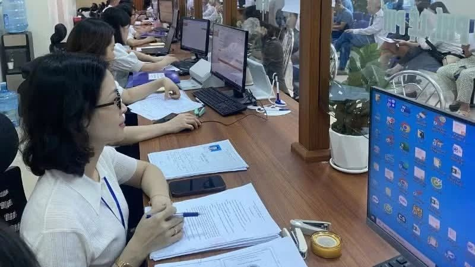
Nâng cao chất lượng cán bộ cơ sở, đáp ứng yêu cầu tình hình mới 🔗 MOI
Theo Chỉ thị nêu trên, việc triển khai vận hành chính quyền địa phương hai cấp , công tác sắp xếp, bố trí cán bộ, công chức cấp xã của các tỉnh, thành phố trực thuộc trung ương được thực hiện nghiêm t
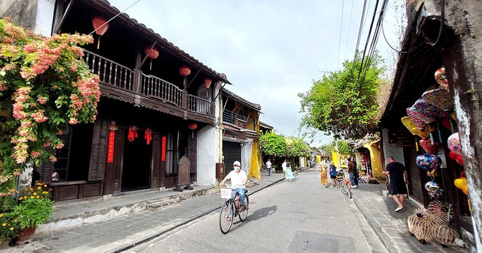
Phố cổ Hội An và vùng lân cận cần 'chiếc áo mới' 🔗 MOI
Ông Nguyễn Đức Bình, Bí thư Đảng ủy P.Hội An (TP.Đà Nẵng), cho biết lãnh đạo TP vừa giao địa phương chủ trì, phối hợp với các cơ quan, đơn vị, địa phương liên quan tổ chức đánh giá việc triển khai thự
Yemen giúp U17 Việt Nam nắm quyền tự quyết cuộc đua đi World Cup 🔗 MOI
Các cầu thủ U17 Yemen khiến cuộc đua giành vé đi World Cup tại bảng C trở nên khó lường. ẢNH: AFC Rạng sáng 11-5 (giờ Việt Nam), các cầu thủ UAE và Yemen bước ra sân thi đấu lượt trận thứ hai tại bảng
Arteta khen trọng tài dũng cảm khi khước từ bàn gỡ của West Ham 🔗 MOI
Trong trận đấu tại sân London, Arsenal bảo toàn chiến thắng tối thiểu sau tình huống gây tranh cãi ở phút bù thứ năm. Callum Wilson đưa bóng vào lưới đội khách, nhưng VAR vào cuộc xét xem pha va chạm
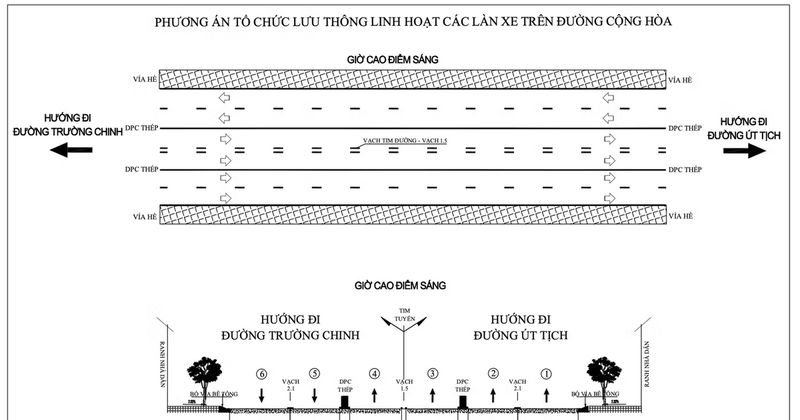
TP.HCM sắp có 'làn đường đảo chiều' đầu tiên 🔗 MOI
Xóa cảnh "bên ùn tắc, bên trống trải" Theo thông báo mới nhất từ Sở Xây dựng TP.HCM, mặt cắt ngang đường Cộng Hòa với 6 làn xe hiện được chia làm 3 phần đường riêng biệt bởi hai cặp vạch trắng nét liề
HLV U17 Việt Nam: 'Bóng đá được quyết định từ những chi tiết rất nhỏ' 🔗 MOI
Trên sân bóng thuộc King Abdullah Sports City ngày 10/5, Việt Nam gây bất ngờ khi Lê Sỹ Bách mở tỷ số ở phút 33. Đội đã ở gần chiến thắng, nhưng thủng lưới ở phút 84 từ một quả đá phạt trực tiếp. Hai
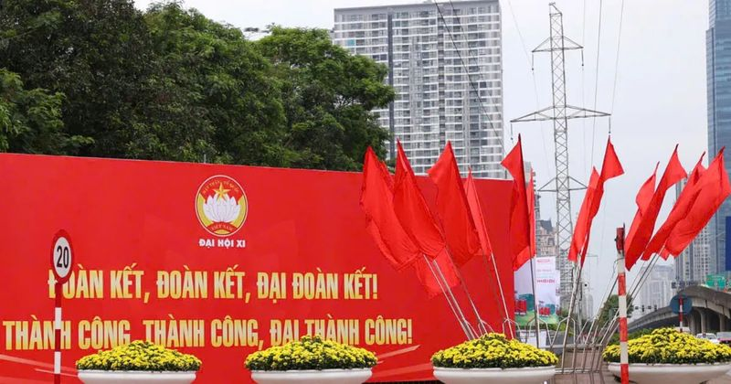
Đại hội đại biểu toàn quốc Mặt trận Tổ quốc Việt Nam lần thứ XI: Hơn 1.300 đại biểu tham dự 🔗 MOI
Theo dự kiến chương trình, phiên khai mạc chính thức đại hội diễn ra vào sáng 12-5. Đại hội sẽ thông qua đề án nhân sự Ủy ban Trung ương MTTQ Việt Nam khóa XI; hiệp thương cử Ủy ban Trung ương MTTQ Vi
Ba kỳ thủ hàng đầu Việt Nam không dự Olympiad cờ vua 2026 🔗 MOI
Danh sách đội tuyển do Liên đoàn Cờ Việt Nam cung cấp gồm 10 kỳ thủ, trong đó đội nam có Bành Gia Huy, Đầu Khương Duy, Đặng Hoàng Sơn, Phạm Trần Gia Phúc và Dương Vũ Anh. Đội nữ gồm Võ Thị Kim Phụng,
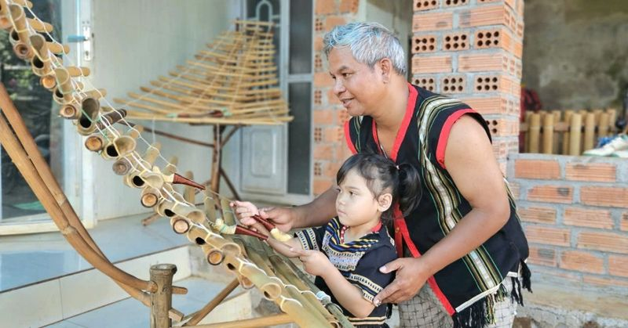
8X Tây Nguyên gác hạnh phúc riêng, đi hát để nuôi đàn con không cùng huyết thống 🔗 MOI
Duyên số kỳ lạ Mỗi chiều, người dân làng Bong Phrâo (phường An Phú, tỉnh Gia Lai ) lại nghe tiếng nhạc cụ ngân vang từ căn nhà nhỏ giản dị. Đó là nhà của anh Y Ploi (SN 1984) và cũng là nơi anh dạy nh
Ngắm lá phổi xanh mướt bên bờ di sản vịnh Hạ Long 🔗 MOI
Công viên Hoa Hạ Long còn được gọi là công viên Lán Bè nằm tọa lạc tại phường Hồng Gai ( TP Hạ Long cũ) tỉnh Quảng Ninh. Công viên nằm vị trí đắc địa ngay ven bờ di sản thiên nhiên thế giới vịnh Hạ Lo
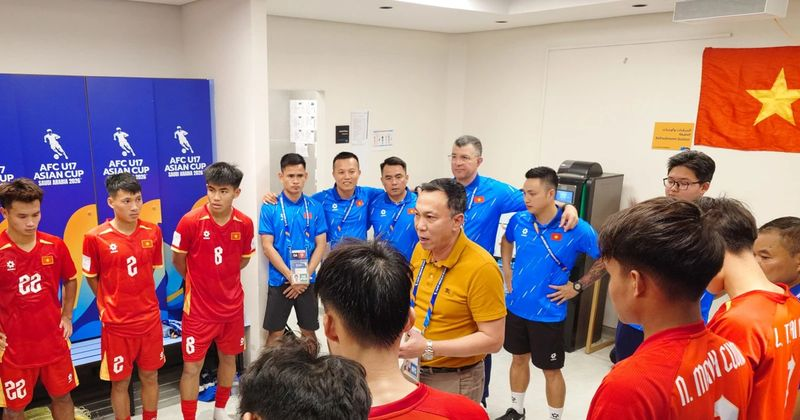
Chủ tịch Trần Quốc Tuấn động viên U17 Việt Nam hướng tới trận quyết định gặp UAE 🔗 MOI
Facebook Twitter Lưu bài viết Bản in Copy link Tối 10/5, đội tuyển U17 Việt Nam bước vào lượt trận thứ hai ở bảng C tại Vòng chung kết U17 châu Á 2026, gặp đối thủ mạnh là U17 Hàn Quốc. Dù nhập cuộc t
Syria cải tổ chính phủ 🔗 MOI
Tổng thống lâm thời Syria Ahmed al-Sharaa ảnh: reuters Ở vị trí bộ trưởng nông nghiệp , người được bổ nhiệm là ông Bassel Sweidan, người cũng đang đứng đầu ủy ban phụ trách đàm phán các thỏa thuận với
Thủng lưới 4 bàn ở phút cuối, U17 Việt Nam thua ngược Hàn Quốc ở VCK Giải châu Á 2026 🔗 MOI
Facebook Twitter Lưu bài viết Bản in Copy link Tối 10/5, đội tuyển U17 Việt Nam bước vào lượt trận thứ hai ở bảng C tại Vòng chung kết U17 châu Á 2026, đối đầu với đối thủ U17 Hàn Quốc - đội đã chia đ

Kết quả bóng đá hôm nay 11/5: Bảng C U17 châu Á khó lường 🔗 MOI
Lịch thi đấu bóng đá hôm nay NGÀY GIỜ TRẬN ĐẤU TRỰC TIẾP V-LEALGUE 2025/26 - VÒNG 22 10/05 17:00 Hoàng Anh Gia Lai 1-2 PVF-CAND FPT Play, TV360+10 10/05 18:00 Hồng Lĩnh Hà Tĩnh 0-2 Thể Công - Viettel
Các lưu ý pháp lý cho chủ nhà và khách lưu trú tại căn hộ du lịch 🔗 MOI
(PLO)- Theo Luật Du lịch 2017 và Luật Cư trú 2020, căn hộ du lịch được xác định là cơ sở lưu trú du lịch; nếu ở tại đây từ 30 ngày trở lên thì phải thực hiện đăng ký tạm trú. Mới đây, báo Pháp Luật TP
Học trò 'cắn bút', ngán ngẩm vì Toán thực tế 🔗 MOI
Bài tập Toán gắn yếu tố thực tế là nỗi sợ lớn nhất của Hoài Anh, học sinh lớp 12 ở Hà Nội. Nữ sinh kể với dạng trả lời trắc nghiệm đúng, sai, em thường chỉ mất 5 phút cho cả bài bốn ý, nếu đề gồm các
Hansi Flick cảm động khi Barca vô địch La Liga ngày cha qua đời 🔗 MOI
Barcelona đánh bại Real Madrid 2-0 một cách dễ dàng trong trận Siêu kinh điển trên sân nhà Camp Nou ở vòng 35 La Liga. Kết quả này đồng nghĩa với việc Barca chính thức giành chức vô địch La Liga sớm 3
Chụp trộm phụ nữ nhưng 'không làm gì khác', có phải là quấy rối tình dục? 🔗 MOI
Nhiều người tỏ ra bức xúc nhưng cũng có người lại đổ cho các cô gái: "Ai bảo ăn mặc kiểu đấy, người ta chụp phải chịu". Tôi rất bất bình với kiểu suy nghĩ đổ lỗi cho nạn nhân như thế này. Một số người
Những việc nên làm buổi sáng để gan khỏe 🔗 MOI
Gan đảm nhiệm nhiều chức năng thiết yếu như lọc độc tố, phân giải chất béo, điều hòa lượng đường trong máu... Buổi sáng là giai đoạn thiết lập tự nhiên của cơ thể sau nhiều giờ nghỉ ngơi. Những thói q
Lịch âm hôm nay: Mấy ngày nữa người Việt đón tháng 4 âm lịch Quý Tỵ? 🔗 MOI
Dương lịch hôm nay là thứ hai, đánh dấu năm 2026 trải qua ngày thứ 130. Theo lịch âm hôm nay 11.5 là ngày 25 tháng 3, theo cách gọi can chi là ngày Ất Dậu, tháng Nhâm Thìn, năm Bính Ngọ. Ngày 11.5 the
U17 Việt Nam thua ngược Hàn Quốc, cơ hội đi tiếp vẫn còn 🔗 MOI
Dẫn trước suốt phần lớn thời gian thi đấu nhưng U17 Việt Nam đã không thể bảo toàn lợi thế và để U17 Hàn Quốc lội ngược dòng thắng 4-1 đầy tiếc nuối ở những phút cuối trận. Trước đối thủ được đánh giá
PSG thắng trận vẫn chưa thể vô địch Ligue 1 🔗 MOI
PSG trải qua trận đấu đầy vất vả trước Brest ở vòng 21 Ligue 1, nhưng vẫn biết cách giành trọn 3 điểm nhờ khoảnh khắc tỏa sáng muộn của Désiré Doué. Chiến thắng 1-0 giúp thầy trò HLV Luis Enrique tiếp
Mạnh tay xóa sổ quảng cáo bẩn 🔗 MOI
Trong 2 ngày 9 và 10-5, Công an TP HCM phối hợp cùng cấp ủy, chính quyền địa phương, các tổ chức đoàn thể và người dân tổ chức 6 đợt ra quân tại các phường Bình Trị Đông, Bình Thới, Thủ Đức, Trung Mỹ
Arsenal thắng nghẹt thở West Ham, áp sát ngôi vô địch Premier League 🔗 MOI
Trong bối cảnh cuộc đua vô địch bước vào giai đoạn quyết định, Arsenal đã trải qua 90 phút đầy căng thẳng trên sân của West Ham trước khi giành chiến thắng tối thiểu nhờ khoảnh khắc lóe sáng của Leand
Tay vợt gốc Việt ngược dòng ấn tượng tại Rome Open 🔗 MOI
Tay vợt người Mỹ gốc Việt Learner Tien tiếp tục tạo dấu ấn mạnh mẽ tại Rome Open 2026 khi vượt qua Alexander Bublik ở vòng 3 sau màn rượt đuổi đầy kịch tính. Dù để thua set đầu, Tien vẫn cho thấy bản
Nhận diện trở ngại, khắc phục vướng mắc 🔗 MOI
Ngày 8-5, Thủ tướng Chính phủ ký ban hành Chỉ thị 18/2026 về việc nâng cao chất lượng cán bộ, công chức chính quyền cấp xã, đáp ứng yêu cầu của tình hình mới Theo Chỉ thị 18, trong việc triển khai chí
VN-Index được dự đoán sớm vượt 2.000 điểm 🔗 MOI
Chỉ số đại diện cho sàn TP HCM đang có trạng thái hưng phấn với chuỗi tăng 4 phiên liên tiếp, qua đó thiết lập kỷ lục mới 1.915 điểm (tính theo giá đóng cửa). Trong báo cáo chiến lược tháng này, phần
Chính quyền tỉnh Champasak và Bầu Đức ký thỏa thuận phát triển 5.000 ha cà phê, nhắm mục tiêu vùng trồng lớn nhất thế giới 🔗 MOI
HAG: Giá hiện tại Thay đổi Xem hồ sơ doanh nghiệp TIN MỚI Chiều ngày 10/05/2026, tại TP. Pleiku (Gia Lai), Ủy ban Chính quyền tỉnh Champasak và Tập đoàn Hoàng Anh Gia Lai (HAGL) chính thức thực hiện k

Chỉ đạo, quyết định của Chính phủ - Thủ tướng Chính phủ 🔗 MOI
09/05/2026 (Chinhphu.vn) - Chính phủ ban hành Nghị định số 147/2026/NĐ-CP hướng dẫn thực hiện cơ chế, chính sách đặc thù tháo gỡ khó khăn, vướng mắc cho các dự... 09/05/2026 (Chinhphu.vn) - Văn phòng
Kịch bản để U17 Việt Nam dự World Cup 🔗 MOI
Sau 2 lượt trận mới nhất tại bảng C, U17 Việt Nam thua U17 Hàn Quốc và U17 UAE thua U17 Yemen 2-3. U17 Hàn Quốc vượt lên dẫn đầu bảng đấu với 4 điểm. U17 Việt Nam và U17 Yemen cùng có 3 điểm (Việt Nam
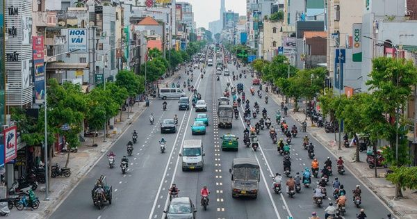
Linh hoạt phân luồng giao thông 🔗 MOI
Sau nhiều ngày rào chắn, cắt dỡ và thi công, tuyến đường Cộng Hòa - một trong những "điểm nóng" ùn tắc giao thông ở cửa ngõ sân bay quốc tế Tân Sơn Nhất, TP HCM - đang thay đổi diện mạo. Dải phân cách
Thủ tục gọn, dân lợi: Thêm nguồn lực giúp phường, xã mạnh hơn 🔗 MOI
Sau gần 1 năm vận hành chính quyền địa phương 2 cấp , hiệu quả bước đầu đã thấy rõ. Bên cạnh đó, trong quá trình khảo sát thực tế, PV Báo Thanh Niên ghi nhận một số trăn trở, kiến nghị từ các phường,
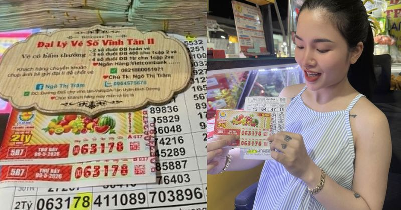
Vợ chồng ở TP.HCM trúng độc đắc xổ số miền Nam, nhận 2,8 tỉ qua chuyển khoản 🔗 MOI
Câu chuyện được chị Ngô Thị Trâm, đại diện đại lý vé số Vĩnh Tân ở TP.HCM (Bình Dương cũ) chia sẻ sau khi vừa đổi thưởng 2 tờ vé số trúng độc đắc xổ số miền Nam , tổng trị giá 4 tỉ đồng (chưa trừ thuế
Rạch Xuyên Tâm với hành trình nước rút 🔗 MOI
Sau hơn 20 năm chờ đợi, dự án cải tạo rạch Xuyên Tâm, tuyến rạch ô nhiễm bậc nhất TP HCM, đang chuyển động rõ nét. Những hộ dân dọc con rạch này đang khẩn trương tháo dỡ nhà cửa, bàn giao mặt bằng. Vì
Bác sĩ Harvard chỉ ra 6 thực phẩm giúp thận khỏe hơn 🔗 MOI
TS.BS Saurabh Sethi, chuyên khoa Tiêu hóa, tốt nghiệp Đại học Harvard (Mỹ), cho biết một số thực phẩm tốt cho thận và lợi ích của chúng đối với hoạt động của cơ quan này. Thận là cơ quan quan trọng, h
Ngọc Trinh: 'Tôi không mơ hạnh phúc lứa đôi' 🔗 MOI
Dịp đóng chính phim Thẩm mỹ viện âm phủ (đạo diễn Hữu Hoàng), cô nói về cuộc sống ở tuổi 37, cùng áp lực lần đầu thử sức với dòng phim kinh dị. - Cơ duyên chị đến với tác phẩm ra sao? - Thật ra, tôi c
Chân dung doanh nghiệp 🔗 MOI
ĐHĐCĐ thường niên 2026 của Sacombank ghi nhận nhiều nội dung lớn: cập nhật tiến độ tái cơ cấu, nợ xấu ở mức 5,01%, kế hoạch lợi nhuận thận trọng.
Bảo đảm Đại hội toàn quốc Mặt trận Tổ quốc Việt Nam lần thứ XI diễn ra thông suốt, hiệu quả 🔗 MOI
Các tiểu ban đã báo cáo với đoàn công tác về phương án đón tiếp đại biểu, bố trí nơi ăn nghỉ, phương tiện di chuyển, hệ thống hạ tầng công nghệ thông tin phục vụ Đại hội. Đồng chí Bùi Thị Minh Hoài đá
Công trình của Giáo sư gốc Việt góp mặt tại triển lãm khoa học danh giá của Anh 🔗 MOI
Facebook Twitter Lưu bài viết Bản in Copy link Hội Hoàng gia Anh - một trong những viện hàn lâm khoa học quốc gia uy tín và lâu đời nhất thế giới (hoạt động từ năm 1660) - vừa thông báo tổ chức Triển
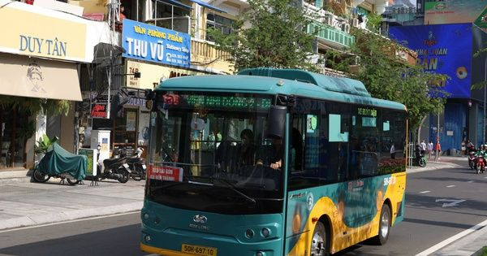
Xe buýt miễn phí cần nhanh và tiện lợi 🔗 MOI
Khi giá vé không còn là rào cản, bài toán tiếp theo là làm sao để xe buýt ở TP HCM cải thiện được hành trình "từ cửa đến cửa", trở thành lựa chọn thực sự nhanh chóng, chủ động và thuận tiện thay thế c

Tử vi ngày 11 tháng 5: Con giáp nào may mắn hôm nay? 🔗 MOI
Tuổi Tí trong tử vi ngày 11 tháng 5 có thể muốn dọn dẹp lại không gian sống hoặc góc làm việc. Điều này không chỉ giúp bạn thấy dễ chịu hơn mà còn khiến suy nghĩ trở nên rõ ràng. Tài lộc ổn định và ph
Kịch bản hấp dẫn 'như phim' sẽ đưa U.17 Việt Nam đoạt vé World Cup: Đấu UAE ngày nào? 🔗 MOI
Cánh cửa rộng mở với U.17 Việt Nam Thất bại đậm 1-4 trước U.17 Hàn Quốc (lượt trận thứ hai bảng C VCK U.17 châu Á 2026) mang đến cảm giác tiếc nuối sâu sắc cho U.17 Việt Nam . Có bàn mở tỷ số ở phút 3
Bảng xếp hạng U.17 châu Á mới nhất: U.17 Việt Nam đứng nhì sau Hàn Quốc, cửa dự World Cup vẫn sáng 🔗 MOI
U.17 Việt Nam vẫn ở trong nhóm dự World Cup U.17 Việt Nam đã trải qua thất bại tiếc nuối trước U.17 Hàn Quốc ở lượt trận thứ hai bảng C VCK U.17 châu Á 2026, diễn ra đêm 10.5. Các học trò HLV Cristian
Đội bóng giàu truyền thống Thái Lan - Muangthong United xuống hạng 🔗 MOI
Trước vòng đấu cuối cùng, Muangthong United chỉ cần hòa chủ nhà Sukhothai là trụ hạng. Tuy nhiên, trước sức ép lớn của đối thủ cạnh tranh trực tiếp, đội bóng cũ của thủ môn Đặng Văn Lâm đã phơi áo với
Thủng 4 bàn trong 10 phút, Việt Nam thua ngược Hàn Quốc 🔗 MOI
* Ghi bàn: Sỹ Bách 32’ – An Sun-hyun 84’, Nam Ian 86', Ahn Joo-wan 88', Kim Ji-woo 90'+4. Trên sân bóng thuộc King Abdullah Sports City, Việt Nam giữ nguyên đội hình xuất phát so với trận ra quân thắn
Arsenal tiến sát ngôi vương Ngoại hạng Anh 🔗 MOI
Trận đấu trên sân London trải qua 10 phút cuối đẫm đầy những cảm xúc trái chiều, với hai tình huống có thể định đoạt cục diện cả mùa giải. Phút 83, cầu thủ vào sân thay người Martin Odegaard bật tường
Loạt thông tin tích cực xuất hiện, VN-Index sẽ sớm chinh phục mốc 2.000 điểm? 🔗 MOI
TIN MỚI Xu hướng tăng xác nhận Báo cáo mới đây của Chứng khoán An Bình (ABS) nhận định, xu hướng tổng quan của thị trường chứng khoán Việt Nam được đánh giá tương đối tích cực trong giai đoạn tới, tro
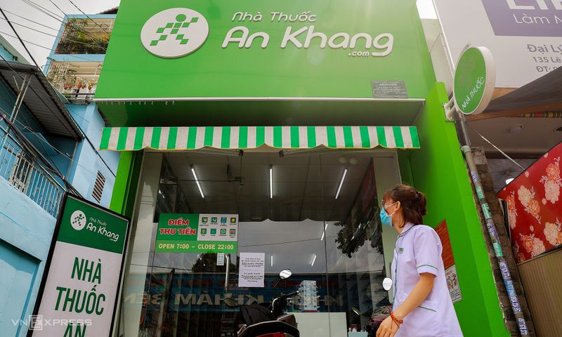
Chuỗi nhà thuốc của Thế Giới Di Động sắp hết lỗ 🔗 MOI
Tại buổi họp mặt nhà đầu tư tổ chức cuối tuần trước, ông Vũ Đăng Linh - Tổng giám đốc Công ty cổ phần Đầu tư Thế Giới Di Động (MWG) - cho biết chuỗi nhà thuốc An Khang sắp hòa vốn sau tái cấu trúc. Ba

Coi chừng nhiễm liên cầu lợn vì thói quen ăn tiết canh, thịt tái 🔗 MOI

Làm thế nào để lên thực đơn dinh dưỡng cho gia đình nhiều thế hệ? 🔗 MOI

Khám tiền hôn nhân ở nam và nữ khác nhau như thế nào? 🔗 MOI

Sử dụng thuốc tăng cường sinh lý để kéo dài 'cuộc yêu', có nên không? 🔗 MOI

Chồng không tinh trùng nhưng vợ vẫn sinh được con 'chính chủ', vì sao? 🔗 MOI

Viêm da tiết bã ở trẻ em khác gì ở người lớn? 🔗 MOI

Xóa xăm có xóa được triệt để hay không? 🔗 MOI

6 dấu hiệu thầm lặng cảnh báo đột quỵ trước 1 tháng 🔗 MOI
Theo The Times of India, 6 dấu hiệu của cơ thể cảnh báo trước 1 tháng khi đột quỵ sắp xảy ra: 1. Chóng mặt bất thường Cảm giác chóng mặt thường được cho là do bỏ bữa, mất nước hoặc đứng dậy quá nhanh.

Hệ thống Bảo hiểm xã hội Việt Nam: Tăng tốc thực hiện các chỉ tiêu nhiệm vụ năm 2025 🔗 MOI
Theo Bảo hiểm xã hội (BHXH) TP. Hồ Chí Minh, mặc dù năm 2025 gặp một số khó khăn, tuy nhiên tập thể cán bộ viên chức, người lao động BHXH TP. Hồ Chí Minh quyết tâm hoàn thành vượt chỉ tiêu giao, với s
CĐV Đông Nam Á tiếc nuối khi U17 Việt Nam thua Hàn Quốc 🔗 MOI
U17 Việt Nam (áo đỏ) khiến nhiều người tiếc nuối - Ảnh: AFC Khuya 10-5, U17 Việt Nam đối đầu với U17 Hàn Quốc tại Giải U17 châu Á 2026. Đoàn quân của HLV Cristiano Roland gây bất ngờ khi có bàn thắng
🔗 MOI
Bạn thấy bộ não hay trái tim trước? Điều đó sẽ bật mí bạn có phải là người ghét hận thù nhưng không dễ tha thứ không. - Bộ não Bộ não Bạn là người tin rằng không nên phán xét người khác khi chưa thật
Tiền đạo Văn Toàn trở lại thi đấu sau hơn 9 tháng 🔗 MOI
Văn Toàn trở lại sau 9 tháng vắng mặt - Ảnh: MINH ĐỖ HLV Vũ Hồng Việt đăng ký Văn Toàn dự bị trận Nam Định làm khách Công An Hà Nội trên sân Hàng Đẫy, thuộc vòng 22 LPBank V-League 2025 - 2026. Vì khô
HLV Polking: 'Tuần sau chúng tôi vô địch' 🔗 MOI
HLV Polking và các cầu thủ CLB Công An Hà Nội đã chạm một tay vào cúp vô địch V-League 2025 - 2026 - Ảnh: MINH ĐỖ Tối 10-5, CLB Công An Hà Nội thắng Nam Định 3-2 trên sân Hàng Đẫy, vòng 22 LPBank V-Le
Tiến Linh xin lỗi, HLV Phùng Thanh Phương thấu hiểu 🔗 MOI
Tiến Linh ghi bàn sau 225 ngày ở V-League 2025-2026 - Ảnh: ĐÌNH VIÊN Sau khi giành chiến thắng 3-1 cùng CLB Công An TP.HCM trước Sông Lam Nghệ An ở vòng 22 V-League 2025-2026, tiền đạo Tiến Linh, thay
Tin tức sáng 11-5: Đề xuất tăng mức chuẩn trợ cấp ưu đãi người có công lên 3,012 triệu đồng 🔗 MOI
Bộ Nội vụ đang lấy ý kiến dự thảo nghị định quy định mức hưởng trợ cấp, phụ cấp và các chế độ ưu đãi người có công với cách mạng - Ảnh: HÀ QUÂN Đề xuất tăng mức chuẩn trợ cấp ưu đãi người có công lên
Sụp đổ 10 phút cuối, U17 Việt Nam để thua ngược U17 Hàn Quốc 🔗 MOI
Niềm vui của Sỹ Bách sau khi ghi bàn vào lưới U17 Hàn Quốc - Ảnh: VFF Sau tiếng còi bắt đầu trận đấu, U17 Việt Nam nhập cuộc đầy tự tin trước U17 Hàn Quốc. U17 Việt Nam - U17 Hàn Quốc: Mở cánh cửa đến
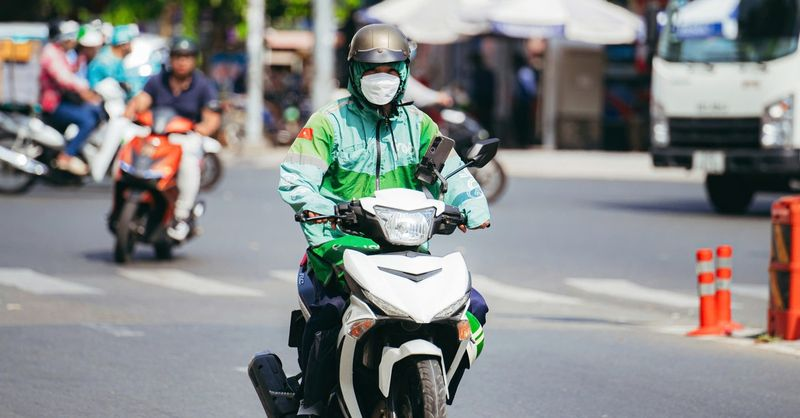
Thời tiết hôm nay 11-5: Bắc Bộ và Nam Bộ nắng nóng, các nơi còn lại chiều tối mưa dông 🔗 MOI
Hôm nay 11-5, Nam Bộ thời tiết nắng nóng - Ảnh: T.L Trung tâm Dự báo khí tượng thủy văn quốc gia cho biết hôm nay 11-5, thời tiết Bắc Bộ mưa rào và dông, riêng khu vực Tây Bắc Bộ và vùng núi phía Bắc
Arsenal 'chết đi sống lại' trước West Ham, vẫn hơn Man City 5 điểm 🔗 MOI
Niềm vui của các cầu thủ Arsenal sau khi giành chiến thắng trước West Ham - Ảnh: AP Khi tiếng còi kết thúc trận đấu giữa chủ nhà West Ham và Arsenal vang lên, rất nhiều cầu thủ đội khách đã gục xuống

Nhật Bản ra mắt 'máy giặt người' trị giá 385.000 USD, làm sạch từ đầu đến chân trong 15 phút 🔗 MOI
Thống đốc Yoshimura Yoshifumi của tỉnh Osaka trải nghiệm máy giặt người Mirai - Ảnh: SISA COMMUNICATION YOUTUBE Theo trang Interesting Engineer ngày 30-11, Công ty Science Inc. của Nhật Bản vừa chính

Hoàn thiện khung khổ pháp lý về tiết kiệm 🔗 MOI
Pháp luật Trong công cuộc phòng, chống lãng phí hiện nay khó có thể tránh khỏi những khó khăn, nguy hiểm, ảnh hưởng tới người đấu tranh chống lãng phí. Do đó, việc bảo vệ người cung cấp thông tin phát
2 người chết bất thường trong nhà ven quốc lộ 1 ở Khánh Hòa: Phát hiện thư tuyệt mệnh 🔗 MOI
Hiện trường nơi xảy ra sự việc là một ngôi nhà nằm ven quốc lộ 1 đoạn qua xã Vạn Hưng, tỉnh Khánh Hòa - Ảnh: B.H. Ngày 10-5, đại diện Công an tỉnh Khánh Hòa cho biết các phòng nghiệp vụ Công an tỉnh n

Cải cách tài chính công thúc đẩy tăng trưởng 🔗 MOI
Pháp luật Trong những năm qua, cùng với việc đẩy mạnh tiến trình xây dựng Nhà nước pháp quyền Việt Nam xã hội chủ nghĩa, công tác xây dựng và hoàn thiện hệ thống pháp luật đã đạt được nhiều thành tựu
Cưa cây dưới trời mưa, một người bị sét đánh tử vong 🔗 MOI
Thi thể ông T. được đưa về nhà an táng theo phong tục địa phương - Ảnh: NDCC Theo thông tin ban đầu, ông S.T. (55 tuổi, ngụ xã Khánh Lâm, tỉnh Cà Mau) đến ấp Vồ Dơi, xã Đá Bạc để cưa cây thuê.

Chính phủ với công dân 🔗 MOI
10/05/2026 (Chinhphu.vn) - Bộ Công Thương đang là đầu mối, chủ trì xây dựng Nghị định thay thế Nghị định số 09/2018/NĐ-CP, trong đó có sửa đổi, bổ sung quy định... 10/05/2026 (Chinhphu.vn) - Bà Lê Thị
bảng giá truyền thông 🔗 MOI

Thông cáo báo chí 🔗 MOI
08/05/2026 (Chinhphu.vn) - Văn phòng Chính phủ vừa có Thông cáo báo chí chỉ đạo, điều hành của Chính phủ, Thủ tướng Chính phủ ngày 8/5/2026. 07/05/2026 (Chinhphu.vn) - Văn phòng Chính phủ vừa có Thông
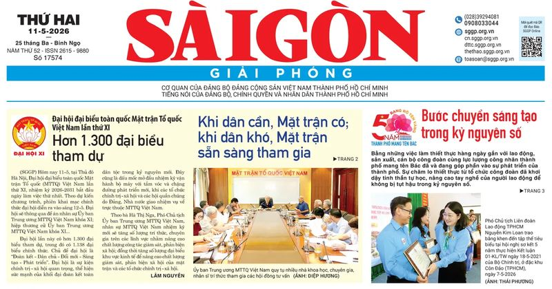
Báo Sài Gòn Giải Phóng ngày 11/5/2026 🔗 MOI
WHO yêu cầu giám sát chặt khách trên tàu du lịch MV Hondius 🔗 MOI
Tổ chức Y tế thế giới (WHO) ngày 9-5, phát cảnh báo y tế đặc biệt liên quan đến virus Hanta chủng Andes, yêu cầu xem toàn bộ hành khách và thủy thủ đoàn trên tàu du lịch MV Hondius - những người tiếp
Barcelona bảo vệ thành công danh hiệu La Liga 🔗 MOI
Barcelona vô địch La Liga sau khi đánh bại đại kình địch Real Madrid. Kết quả của trận siêu kinh điển được định đoạt ngay trong hiệp đấu thứ nhất. Với lợi thế sân nhà, Barcelona chơi lấn lướt và ghi đ
“Từ vị trí người ra đi, chúng tôi trở thành người cùng đi với dân tộc” 🔗 MOI
Từ trải nghiệm của một người Việt xa quê nhiều thập kỷ, bà Phan Bích Thiện - Ủy viên Ủy ban Trung ương MTTQ Việt Nam, Chủ tịch Diễn đàn Phụ nữ Việt Nam tại châu Âu, Chủ tịch Hội Phụ nữ Việt Nam tại Hu
Thua ngược Hàn Quốc đau đớn, U-17 Việt Nam chờ cơ hội cuối 🔗 MOI
(PLO)- Tưởng như đã cầm chắc cơ hội tạo nên lịch sử, nhưng U-17 Việt Nam lại trải qua màn thua ngược đầy cay đắng U-17 Hàn Quốc trong trận đấu quan trọng tại vòng bảng giải U-17 châu Á. Dẫn trước suốt
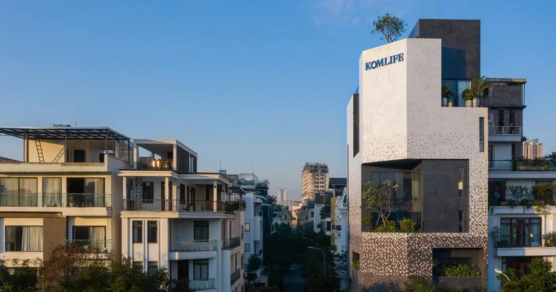
Tòa nhà văn phòng được thiết kế như 'một ngọn núi giữa đô thị' 🔗 MOI
Thay vì đi theo lối mòn của những khối nhà phủ kính vốn lệ thuộc vào ánh sáng nhân tạo và điều hòa, nhóm thiết kế đã đề xuất một hướng tiếp cận khác biệt, kiến tạo nên một khối kiến trúc mạnh mẽ, dữ d
Nguyễn Phan Linh Đan: Nghề quay phim cho tôi một vị trí đặc biệt 🔗 MOI
Là một trong số ít nữ đạo diễn hình ảnh (DOP) được vinh danh tại Liên hoan phim (LHP) Cannes 2026, và giải thưởng Pierre Angénieux Tribute không dành cho một bộ phim cụ thể mà ghi nhận cả hành trình s
Khách Hà Nội tới ngôi làng có tên ngắn nhất thế giới, cảnh đẹp như tranh 🔗 MOI
3 tuần khám phá quần đảo độc đáo bậc nhất thế giới Lofoten là một quần đảo thuộc hạt Nordland (Na Uy), có diện tích khoảng 1.227 km2 và dân số ít ỏi. Quần đảo này là điểm đến hấp dẫn những người mê xê
Du sơn ngoại thủy: 'Năm hòn chiếu thủy hình kỳ quái' 🔗 MOI
"Bia xưa rêu đá trổ da mồi" Qua đèo Hải Vân, những tàn tích của một thời mở cõi còn đây, dấu vết phong sương in hằn nơi các công trình do con người tạo tác, trong đó có Hải Vân quan. "Ải cổ mây cây ch
U17 Việt Nam thua ngược 4 bàn vào cuối trận trước Hàn Quốc 🔗 MOI
Sỹ Bách ghi bàn mở tỷ số cho U17 Việt Nam. Ảnh: ĐOÀN NHẬT Đội U17 Việt Nam phần nào gây bất ngờ cho các cầu thủ Hàn Quốc khi chủ động lối chơi tấn công ngay từ đầu trận và liên tiếp thực hiện nhiều ph

Tốn tiền, thêm lo bởi tầm soát sức khỏe tràn lan 🔗 MOI
"Tôi cứ nghĩ mãi, lỡ cái máy nó bỏ sót thì sao," người đàn ông 64 tuổi ở Hà Nội nói, tay lật đi lật lại tập kết quả dày cộp. "Họ bảo tầm soát từ A đến Z, không bỏ sót ngóc ngách nào. Nhưng tôi vẫn thấ
Giá bạc hôm nay 11/5/2026 tăng vọt 5 triệu đồng/kg, lập đỉnh gần 2 tháng 🔗 MOI
Giá bạc trong nước hôm nay 11/5/2026 Tuần qua, thị trường bạc trong nước chứng kiến đà thăng hoa của kim loại quý này sau khi lập đỉnh cao nhất từ đầu tháng 4 đến nay. Trước khi bước vào kỳ nghỉ cuối
Nam giới bị bạo hành gia đình tăng: Vì sao nhiều người vẫn im lặng? 🔗 MOI
Chính phủ mới đây có báo cáo gửi Quốc hội về kết quả thực hiện các mục tiêu quốc gia về bình đẳng giới năm 2025. Kết quả cho thấy nhiều chuyển biến tích cực, song cũng chỉ ra những yếu tố "đảo chiều"
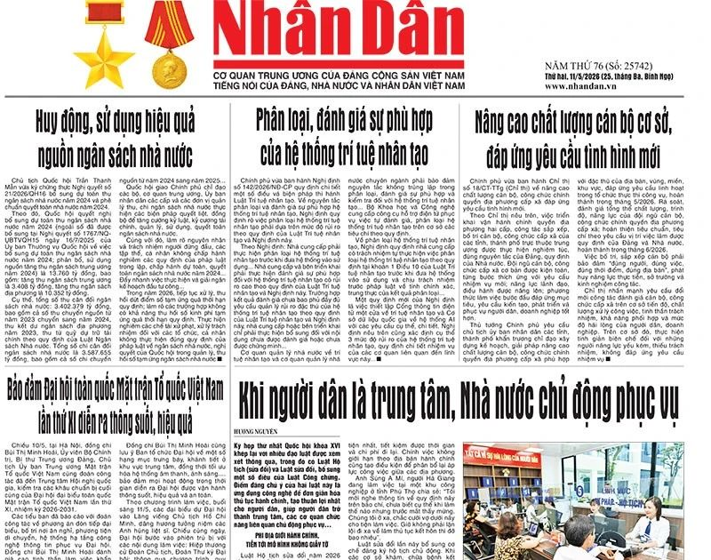
Báo Nhân Dân số 25742 🔗 MOI
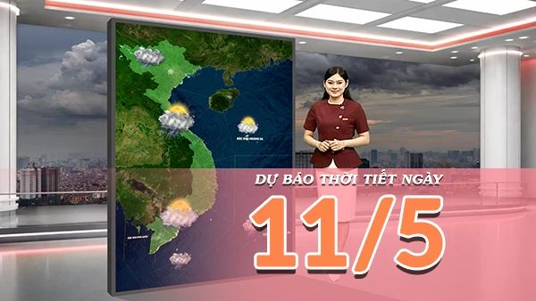
[Video] Dự báo thời tiết ngày 11/5/2026: Bắc Bộ duy trì mưa dông, Nam Bộ tiếp tục nắng nóng gay gắt 🔗 MOI
Từ sáng sớm, khu vực Bắc Bộ tiếp tục duy trì trạng thái nhiều mây, có mưa rào và dông rải rác do chịu ảnh hưởng của khối không khí lạnh suy yếu và lệch dần ra phía Đông. Khu vực trung du và vùng núi p
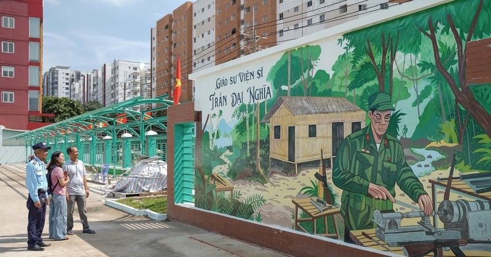
Hồi sinh đất nghĩa trang Bình Hưng Hòa thành ngôi trường hiện đại 🔗 MOI
Trường Tiểu học Trần Đại Nghĩa rộng hơn 8.800 m 2 tọa lạc trên đường Hương Lộ 3, phường Bình Hưng Hòa. Đây là một phần trong tổng thể quy hoạch sử dụng lại đất sau khi di dời nghĩa trang Bình Hưng Hòa
Pháp cách ly khẩn hành khách nghi nhiễm virus Hanta từ tàu MV Hondius 🔗 MOI
Facebook Twitter Lưu bài viết Bản in Copy link Ngày 10/5, Chính phủ Pháp xác nhận một trong 5 công dân nước này trở về từ tàu du lịch MV Hondius đã xuất hiện triệu chứng nghi nhiễm virus Hanta ngay tr
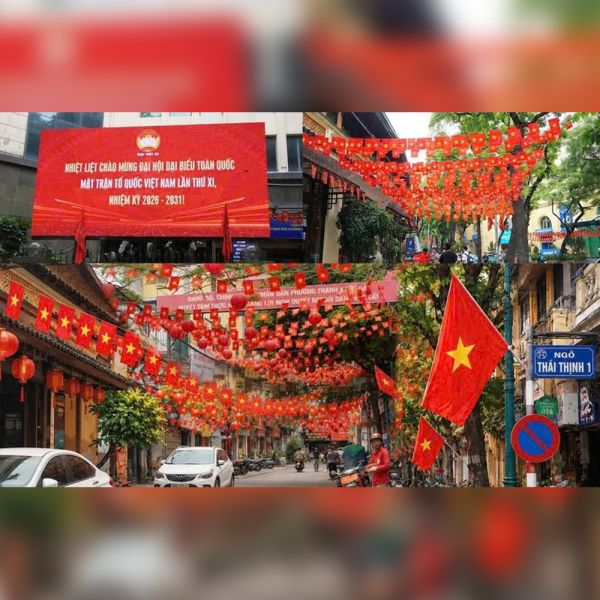
Bản tin thời sự sáng 11/5/2026: Hôm nay diễn ra phiên trù bị Đại hội đại biểu MTTQ Việt Nam lần thứ XI 🔗 MOI
Khi dân cần, Mặt trận có; khi dân khó, Mặt trận sẵn sàng tham gia 🔗 MOI
Để hiện thực hóa khát vọng xây dựng một nước Việt Nam hòa bình, độc lập, dân chủ, phồn vinh, văn minh, hạnh phúc, vững bước đi lên chủ nghĩa xã hội, dưới sự lãnh đạo của Đảng, MTTQ Việt Nam tiếp tục đ
Bảo đảm kỳ thi diễn ra an toàn, nghiêm túc, đạt hiệu quả cao nhất 🔗 MOI
Chỉ còn 1 tháng nữa là diễn ra kỳ thi tốt nghiệp THPT năm 2026. Bộ GD-ĐT đang tập trung chỉ đạo để hoàn tất các công tác chuẩn bị cho kỳ thi. GS Huỳnh Văn Chương, Cục trưởng Cục Quản lý chất lượng (Bộ
Ngành xuất bản đẩy mạnh chuyển đổi số 🔗 MOI
với sự tham gia của nhiều chủ thể mới, đặt ra yêu cầu đổi mới cả về tư duy phát triển lẫn phương thức quản lý nhà nước Sự thay đổi thói quen đọc và mua sách của nhiều người đang buộc ngành xuất bản Vi
BHYT không thanh toán hơn 900 triệu, bệnh viện lý giải việc yêu cầu bác sĩ bồi hoàn 🔗 MOI
Xuất toán BHYT ngày càng áp lực Gần đây, trong nhiều diễn đàn của nhân viên y tế chia sẻ câu chuyện Bệnh viện Đa khoa Bà Rịa (TPHCM) yêu cầu bác sĩ bồi hoàn số tiền bị cơ quan Bảo hiểm y tế (BHYT) xuấ
Báo Pháp Luật TP. Hồ Chí Minh 🔗 MOI
Đề xuất phạt 10 triệu đồng nếu không tổ chức ngày toàn dân tiết kiệm, chống lãng phí 🔗 MOI
Bộ Tư pháp mới đây công bố hồ sơ thẩm định dự thảo Nghị định của Chính phủ quy định xử phạt vi phạm hành chính trong lĩnh vực tiết kiệm, chống lãng phí. Hồ sơ do Bộ Tài chính chủ trì soạn thảo. Nghị đ
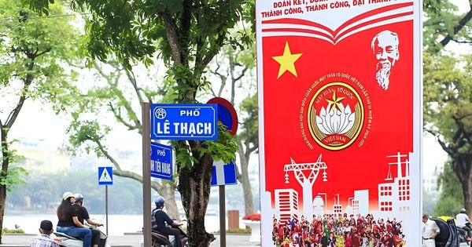
MTTQ hướng về cơ sở, gần dân và vì dân 🔗 MOI
Đại hội Đại biểu toàn quốc MTTQ Việt Nam lần thứ XI, nhiệm kỳ 2026-2031 với chủ đề "Đoàn kết - Dân chủ - Đổi mới - Sáng tạo - Phát triển" sẽ diễn ra từ ngày 11 đến 13-5 tại Trung tâm Hội nghị quốc gia
U17 Việt Nam thua tiếc nuối U17 Hàn Quốc: Giá như đừng toan tính 🔗 MOI
Thất bại tiếc nuối Trước một đối thủ được đánh giá mạnh hơn rất nhiều như U17 Hàn Quốc, U17 Việt Nam vẫn nhập cuộc đầy tự tin và chơi sòng phẳng trong phần lớn thời gian đầu tiên của trận đấu. Phần th
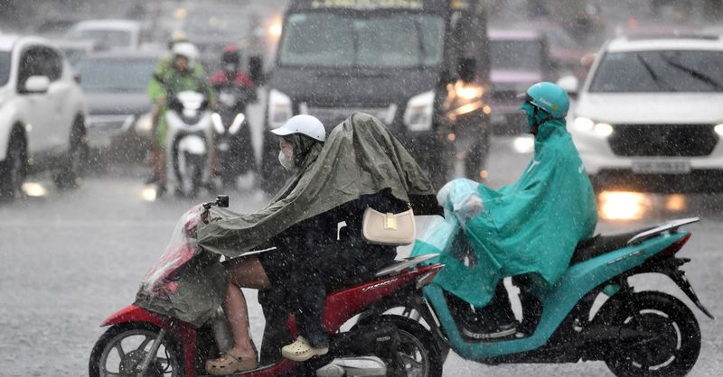
Dự báo thời tiết 11/5/2026: Miền Bắc tiếp tục mưa giông, sắp xuất hiện nắng nóng 🔗 MOI
Theo Trung tâm Dự báo khí tượng thủy văn quốc gia, ngày 11/5, ở khu vực vùng núi Bắc Bộ có mưa rào và giông rải rác với lượng mưa 10-20mm, cục bộ có nơi mưa to trên 60mm. Từ ngày 13/5, miền Bắc có nắn
Barca kiếm bộn tiền với danh hiệu La Liga thứ 2 liên tiếp 🔗 MOI
Barcelona không nhận một khoản tiền thưởng trực tiếp bằng tiền mặt cho chức vô địch La Liga, sau khi thắng Real Madrid 2-0, nhưng vẫn đảm bảo một nguồn thu khổng lồ trong bóng đá Tây Ban Nha. Danh hiệ
Chung dòng máu Lạc Hồng: Lan tỏa hồn Việt trên đảo quốc Sri Lanka 🔗 MOI
Chia sẻ với Thanh Niên , đại đức Thích Pháp Quang cho biết bản thân cùng toàn thể tăng ni sinh và kiều bào tại Sri Lanka vô cùng xúc động khi tham dự cuộc gặp gỡ của Tổng Bí thư, Chủ tịch nước Tô Lâm
Anh hùng nào hy sinh khi mới 14 tuổi, là người đội trưởng thiếu niên đầu tiên? 🔗 MOI
1. Người anh hùng nào hy sinh khi mới 14 tuổi, là người dân tộc Nùng? Anh hùng Lê Văn Tám 0% Anh hùng Vừ A Dính 0% Anh hùng Kim Đồng 0% Chính xác Theo Cổng thông tin của tỉnh Cao Bằng , anh Kim Đồng,
El Niño dần hình thành: Thời tiết cực đoan sẽ còn khốc liệt hơn? 🔗 MOI
"Siêu El Niño" và những kịch bản tồi tệ Mối lo ngại lớn nhất trong năm 2026 là sự trở lại của El Niño. Các mô hình khí hậu quốc tế đồng loạt cảnh báo xác suất xuất hiện hiện tượng này từ giữa năm đạt
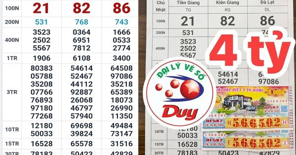
Nhà sư trúng độc đắc xổ số miền Nam, nhận thưởng hết qua chuyển khoản 🔗 MOI
Sáng 11-5, sau khi kết quả xổ số miền Nam được công bố, các đại lý vé số đã tìm ra nơi trúng giải độc đắc và giải an ủi vé số của 2 đài. Kết quả xổ số miền Nam ngày 10-5. Ảnh: ĐLVS Duy Giải an ủi của
VIDEO: Cá heo trắng quý hiếm tung tăng bơi lội trên vùng biển Đồ Sơn 🔗 MOI
Ngày 10-5, lực lượng biên phòng trong lúc làm nhiệm vụ đã phát hiện đàn cá heo tung tăng bơi lội tại khu vực biển gần đảo Hòn Dấu, phường Đồ Sơn, TP Hải Phòng. Video đàn cá heo xuất hiện tại vùng biển
Rashford ghi tuyệt phẩm hạ Real Madrid, Barca vô địch La Liga 🔗 MOI
Trận El Clasico rạng sáng 11/5 trở thành bước ngoặt quyết định trong cuộc đua vô địch La Liga 2025/26. Trước Real Madrid đang nỗ lực bám đuổi, Barcelona của HLV Hansi Flick thể hiện bản lĩnh đội đầu b
Tottenham phải chật vật trụ hạng 🔗 MOI
Tottenham phải căng sức thi đấu để kiếm suất trụ hạng khi tiếp đón đối thủ vừa tầm Leeds United trên sân nhà lúc 2 giờ ngày 12-5. Quyết định số phận cả mùa giải Trận tiếp đón Leeds United tại London r
Chứng khoán VIX triệu tập ĐHĐCĐ thường niên năm 2026 🔗 MOI
TIN MỚI Ảnh minh họa Công ty CP Chứng khoán VIX (MCK: VIX) đã công bố Nghị quyết HĐQT triệu tập họp ĐHĐCĐ thường niên năm 2026. Theo đó, ngày 27/5/2026 là ngày đăng ký cuối cùng để thực hiện quyền tha

Google ra mắt Gemma 4, AI chạy offline trên thiết bị cá nhân 🔗 MOI
Gemma 4 chạy trực tiếp trên thiết bị cá nhân - Ảnh: THOMAS FULLER Trong bối cảnh trí tuệ nhân tạo vẫn phụ thuộc vào hạ tầng đám mây, việc một mô hình có thể hoạt động trực tiếp trên thiết bị cá nhân đ
Thầy Giôm của Công Phượng, Lý Đức 'xuất quân' tuyển học trò mới 🔗 MOI
Học viện Bóng đá Nutifood khởi động Ngày hội bóng đá nhí 2026 kết hợp tuyển sinh Khóa 4 tại SVĐ Thanh Trì, thu hút hàng nghìn thí sinh nhí cùng phụ huynh tại Hà Nội và các tỉnh lân cận đến tham gia. T
Ăn 1 - 2 tép tỏi mỗi ngày, cơ thể nhận lợi ích không ngờ 🔗 MOI
Nghiên cứu được công bố gần đây trên tạp chí khoa học Cell Metabolism đã phát hiện một tác dụng bất ngờ của tỏi. Nghiên cứu do Trường Y Đại học Washington (Mỹ) dẫn đầu, phối hợp với các cơ quan khoa h
Kỷ lục tại Tân Sơn Nhất và cú đột biến tại Nội Bài: Điều gì đã xảy ra? 🔗 MOI
TIN MỚI Sau các năm chịu tác động bởi dịch bệnh và suy giảm thương mại toàn cầu, ngành dịch vụ hàng hóa hàng không tại Việt Nam đang bước vào giai đoạn phục hồi rõ nét. Năm 2025 ghi nhận doanh thu và
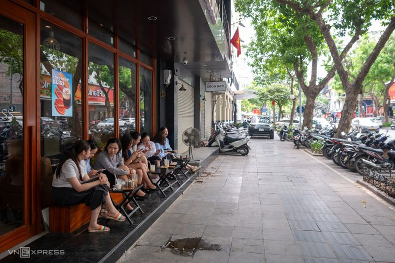
Thích ứng mưu sinh khi công an siết phạt lấn chiếm vỉa hè 🔗 MOI
Tại quán cà phê ở phố Ngô Quyền, bàn ghế được sắp xếp gọn gàng trên phần bậc thềm sát vỉa hè để tránh bị xử phạt. Hà Nội có khoảng 1.100 tuyến phố có vỉa hè, song trước kia phần lớn vỉa bị lấn chiếm l

Tạo website chỉ trong vài phút với AI 'Made in Vietnam' 🔗 MOI
Công nghệ AI hỗ trợ lập trình viên tạo code dựa trên ý tưởng. Trong bối cảnh chuyển đổi số ngày càng mạnh mẽ, việc phát triển phần mềm và website truyền thống đòi hỏi nhiều thời gian và nguồn
Xuân Lan: 'Tôi thua lỗ 30 tỷ đồng, may có nhà để bán bù lại' 🔗 MOI
Xe Clip: Xe máy phóng nhanh đâm vỡ kính lái ô tô
U17 Yemen gây sốc hạ U17 UAE, U17 Việt Nam hưởng lợi 🔗 MOI
Xem độc quyền Giải vô địch U17 Châu Á, từ 5/5 đến 23/5 trên TV360 tại https://tv360.vn Sau khi phơi áo trước U17 Việt Nam ngày ra quân, U17 Yemen đã xốc dậy tinh thần và thi đấu cực kỳ quật khởi trước
WHO trấn an về virus Hanta 🔗 MOI
Tàu du lịch MV Hondius - tâm điểm của đợt bùng phát virus Hanta chết người - đã đến đảo Tenerife - Tây Ban Nha ngày 10-5 nhưng vẫn neo đậu ngoài khơi. Tổ chức Y tế thế giới (WHO), giới chức Tây Ban Nh
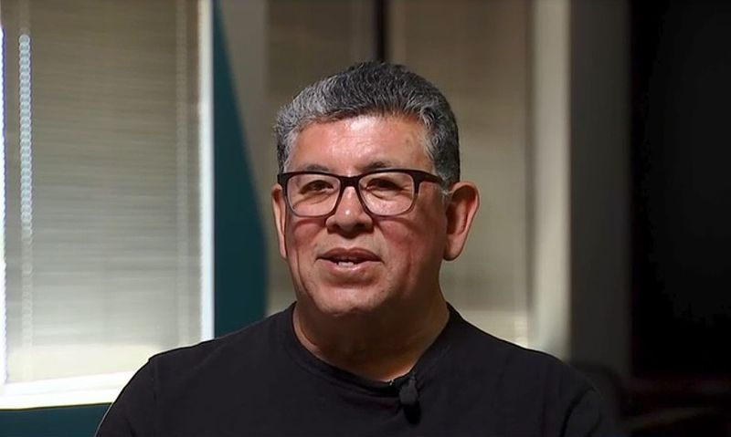
Nỗi đau mất mẹ và em gái của người đàn ông sau thảm kịch Hantavirus 🔗 MOI
Những dòng tiêu đề về Hantavirus không khiến Gilbert Zermeño hoảng loạn nhưng chúng lại khơi dậy trong ông những ký ức đau thương. Ông là một nhiếp ảnh gia kỳ cựu của đài Arizona’s Family, thường được
Báo Hàn Quốc hú vía: 'U.17 Việt Nam chơi đầy khó chịu, chúng ta đã thoát hiểm ngoạn mục' 🔗 MOI
Đối mặt với ứng cử viên nặng ký cho danh hiệu vô địch, U.17 Việt Nam đã chơi đầy kiên cường. Đội bóng của HLV Cristiano Roland phòng ngự chặt chẽ và bất ngờ vượt lên dẫn trước ở phút 32 nhờ công của S
U17 Việt Nam thua ngược U17 Hàn Quốc trong 10 phút cuối trận 🔗 MOI
Highlights U17 Việt Nam 1-4 U17 Hàn Quốc Xem độc quyền Giải vô địch U17 Châu Á, từ 5/5 đến 23/5 trên TV360 tại https://tv360.vn U17 Việt Nam nhập cuộc thận trọng trước sức ép lớn từ U17 Hàn Quốc. Đại
Video bóng đá U17 Việt Nam vs U17 Hàn Quốc: 10 phút choáng váng 🔗 MOI
Highlights U17 Việt Nam 1-4 U17 Hàn Quốc Xem độc quyền Giải vô địch U17 Châu Á, từ 5/5 đến 23/5 trên TV360 tại https://tv360.vn Ghi bàn: U17 Việt Nam: Sỹ Bách mở tỷ số (32') u17 Hàn Quốc: An Sun-hyun
Sáng nào cũng ăn 1 ổ bánh mì: Nghiên cứu mới phát hiện điều đáng chú ý 🔗 MOI
Một nghiên cứu mới công bố trên tạp chí khoa học Molecular Nutrition & Food Research vừa phát hiện tác động đáng lưu tâm của bánh mì đối với cân nặng và chuyển hóa. Nghiên cứu do Đại học Osaka Metropo
Arsenal thắng nghẹt thở West Ham, tiến sát ngôi vương 🔗 MOI
Trossard ăn mừng bàn thắng duy nhất của trận đấu - Ảnh: P.L Đội hình ra sân West Ham: Hermansen, Wan-Bissaka, Mavropanos, Disasi, Diouf, Bowen, Fernandes, Soucek, Summerville, Wilson, Castellanos. Ars
Điều gì xảy ra khi bạn thường xuyên ăn húng quế? 🔗 MOI
Húng quế thuộc họ bạc hà, có nguồn gốc chủ yếu từ các vùng nhiệt đới của Ấn Độ, châu Phi và Đông Nam Á. Loại rau thơm này được sử dụng phổ biến trong ẩm thực lẫn y học cổ truyền nhằm hỗ trợ sức khỏe.
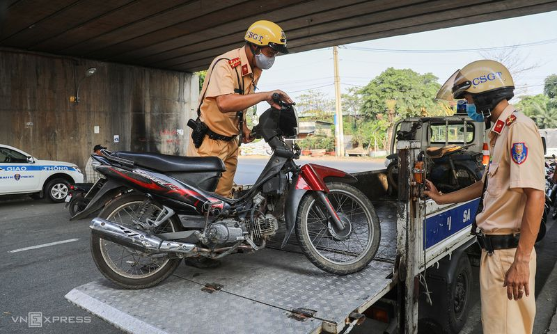
Đề xuất bỏ tịch thu, tạm giữ xe với 4 lỗi vi phạm giao thông 🔗 MOI
Sau lần lấy ý kiến hồi giữa tháng 4, Bộ Công an vừa hoàn thiện và công bố dự thảo lần 3 về Nghị định sửa đổi, bổ sung Nghị định 168/2024. Trong nội dung mới được bổ sung, Bộ Công an đề xuất bãi bỏ biệ
Lý do người đàn ông xóa số đường dây nóng, số cứu hộ trên biển báo bên cao tốc 🔗 MOI
Gửi bình luận Bình luận ( 0 ) Hiện chưa có bình luận nào, hãy là người đầu tiên bình luận Xem thêm bình luận

An ninh mạng Việt Nam trước thách thức kép: APT và camera giá rẻ 🔗 MOI
Tấn công có chủ đích APT hiện là một trong những rủi ro lớn về an ninh mạng - Ảnh: DRIZ Ngày 18-12, Trung tâm Thông tin, Thống kê và Ứng dụng tiến bộ khoa học công nghệ (Sở Khoa học và Công nghệ TP.HC

CMC OpenAI phát triển mô hình AI pháp lý tiếng Việt 🔗 MOI
Bộ chuẩn đánh giá VLegal - Bench của nhóm nghiên cứu C-OpenAI đăng ký trên cổng arXiv của Trường đại học Cornell - Mỹ phiên bản mới nhất cập nhật ngày 25-12-2025. CMC OpenAI , công t
Nghiên cứu thị trường 🔗 MOI
9 tháng đầu năm 2025, CPI tăng 3,27%, lạm phát cơ bản tăng 3,19%, Cục Thống kê đánh giá lạm phát 'đang trong tầm kiểm soát'.
Câu chuyện thương trường 🔗 MOI
Các dự án tập trung vào các lĩnh vực công nghiệp, hạ tầng, xử lý rác thải, thiết bị y tế, vật tư sản xuất nông nghiệp, may mặc, thương mại, dịch vụ tổng hợp, chế biến nông sản.

'Học đến khi tan đá' đang hút giới trẻ 🔗 MOI
"Học đến khi tan đá" đang trở thành trào lưu cuốn hút nhiều bạn trẻ trên mạng xã hội - Ảnh chụp màn hình Bỏ điện thoại xuống, tập trung "học đến khi tan đá" Người tham gia thử thách sẽ để một cục đá l

AirSnitch có thể chặn và theo dõi dữ liệu WiFi mà không cần mật khẩu 🔗 MOI
Nguy cơ nghe lén từ bên trong một mạng WiFi nội bộ - Ảnh: EZONE.HK Một kỹ thuật tấn công mới mang tên AirSnitch cho thấy WiFi có mật khẩu mạnh chưa chắc đã an toàn tuyệt đối. Dữ liệu người dùng vẫn có

ChatGPT giảm lỗi chữ méo, sai chính tả khi tạo ảnh 🔗 MOI
Giờ đây ChatGPT đã có thể tạo chữ trong ảnh chính xác hơn - Ảnh: REUTERS Trước đây, các công cụ AI tạo ảnh dù rất mạnh về hình ảnh nhưng lại gặp khó khăn khi xử lý chữ. Những lỗi như sai chính tả, biế

Đột phá trong khám chữa bệnh nhờ tự động hóa 🔗 MOI
Robot hỗ trợ y tá trong bệnh viện - Ảnh: RYAN DAWS Tự động hóa trong bệnh viện là việc ứng dụng các hệ thống công nghệ như trí tuệ nhân tạo (AI), thiết bị IoT, phần mềm quản lý thông minh, máy tự động

Google ra mắt AI nhận diện tin nhắn lừa đảo, người dùng Android có thể yên tâm hơn? 🔗 MOI
Tính năng AI của Google giúp phát hiện tin nhắn và cuộc gọi lừa đảo. Lừa đảo qua tin nhắn và cuộc gọi đang trở thành một trong những rủi ro phổ biến của đời sống số. Khi smartphone ngày càng giữ vai t

Không cần nhấp link nữa: SEO xoay xở ra sao khi AI chiếm trang tìm kiếm? 🔗 MOI
SEO có đang mất dần lợi thế khi AI vào cuộc? Trong hơn một thập kỷ, SEO là nền tảng giúp nội dung tiếp cận độc giả thông qua công cụ tìm kiếm . Tuy nhiên cùng với sự xuất hiện của trí tuệ nhân tạo tro

Code do AI viết nhanh hơn, nhưng lỗi nhiều gấp 1,7 lần con người 🔗 MOI
AI chuyển hóa từ ý tưởng sang sourcecode nhanh nhưng chưa tinh Nghiên cứu mới nhất từ CodeRabbit (một công cụ đánh giá mã nguồn phổ biến) chỉ ra rằng mã nguồn do AI tạo ra có tỉ lệ lỗi cao gấp 1,7 lần
Sơ tán du thuyền có ổ dịch vi rút Hanta 🔗 MOI
Reuters ngày 10.5 dẫn thông báo của Bộ Y tế Tây Ban Nha cho hay nước này tiến hành quá trình sơ tán hành khách trên du thuyền MV Hondius neo đậu gần đảo Tenerife, khi các quan chức y tế lên du thuyền
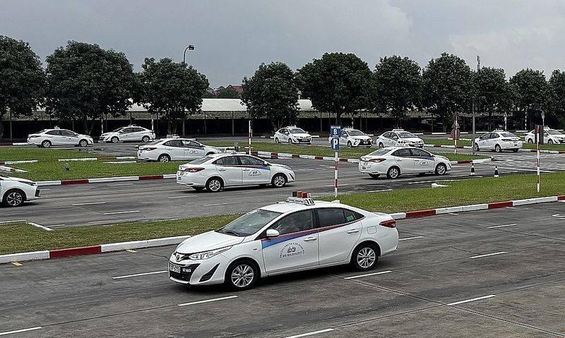
7 điểm mới trong đào tạo lái xe 🔗 MOI
Bộ Xây dựng vừa ban hành Thông tư 17/2026 sửa đổi Thông tư 14/2025 về đào tạo lái xe, với nhiều thay đổi liên quan kiểm tra hoàn thành khóa học, thời lượng đào tạo, quản lý dữ liệu và thủ tục hành chí
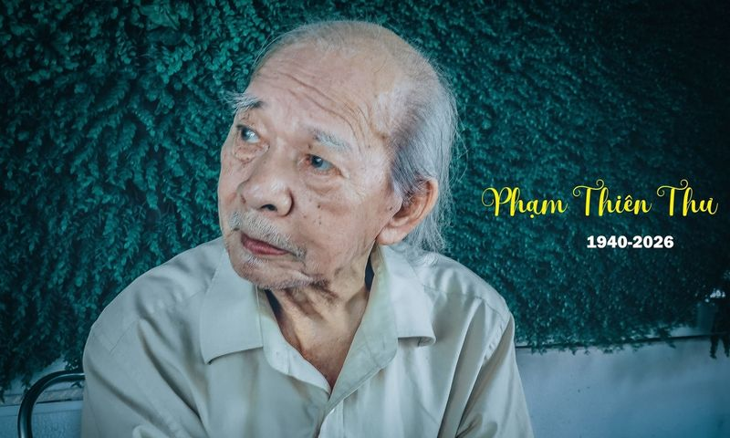
Thi sĩ Phạm Thiên Thư - 'rằng xưa có gã từ quan' 🔗 MOI
Nhà thơ Phạm Thiên Thư qua đời chiều 7/5, tại TP HCM, khép lại đời thi sĩ có giọng thơ lạ lùng trong văn học Việt Nam hiện đại - người mơ trong "cõi xưa Hoàng Thị". Tên tuổi ông nhắc nhớ một thời vang
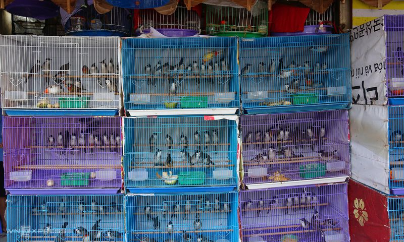
Chim trời tự bay vào nhà, tôi giữ lại nuôi có được không? 🔗 MOI
Tôi không biết đây là chim gì mà chỉ thấy rất đẹp và hót hay. Tôi nghĩ chỉ người mua bán trái phép, săn bắt chim mới bị coi là vi phạm pháp luật. Nhưng bạn tôi bảo mọi chuyện không đơn giản vậy, cần t
Vì sao FIFA ASEAN Cup 2026 đặc biệt quan trọng với đội tuyển Việt Nam? 🔗 MOI
Bóng đá Đông Nam Á có thể sắp đón thêm một giải đấu hoàn toàn mới mang tên FIFA ASEAN Cup. Đây là sân chơi do FIFA lên kế hoạch tổ chức dành riêng cho các đội tuyển trong khu vực và được đánh giá sẽ t
Lịch thi đấu U.17 nữ Việt Nam - Úc hôm nay: Vượt khó để giành vé World Cup 🔗 MOI
Bóng đá trẻ VN đang đứng trước ngưỡng cửa lịch sử khi đội tuyển U.17 nữ VN góp mặt trong nhóm 8 đội mạnh nhất châu lục. Cuộc đối đầu vào chiều nay với U.17 nữ Úc không khác gì một trận chung kết đối v

Những điểm check-in ở Nha Trang 'nổi rần rần trên mạng' 🔗 MOI
Bờ kè xóm Chụt đặc biệt thu hút giới trẻ đến check-in trong thời gian gần đây - Ảnh: TRẦN HOÀI Bên cạnh những điểm đến, các khu du lịch vốn đã nổi tiếng, nhiều điểm check-in miễn phí hoặc với chi phí

Kỳ tích 2 bé sinh đôi chào đời cách nhau 13 tuần 🔗 MOI
Cha mẹ và em bé thứ 2 trong cặp song sinh - Ảnh: BVCC Theo ông Hưng, cha mẹ của bé (36 và 32 tuổi) đã mong con 5 năm mà chưa được toại nguyện, lần này mẹ bé mang thai đôi nhờ hỗ trợ sinh sản (IVF). Đế

Vinhomes Green Paradise Cần Giờ khiến TP.HCM ‘mơ lớn' về du lịch thể thao, tại sao không? 🔗 MOI
Khoảng 5.000 runner đổ về Cần Giờ đi race VnExpress Marathon Green Paradise Cần Giờ - Ảnh: QUANG ĐỊNH Khởi công từ 19-4 năm ngoái, tới ngày 1-5, đại lộ Tương Lai - Thời Đại rộng, thẳng tắp thuộc dự án

Lái Ferrari 849 Testarossa mới hiểu vì sao có người sẵn sàng đổi penthouse lấy 'ngựa chồm nước Ý' 🔗 MOI
Ferrari 849 Testarossa được lấy cảm hứng từ một số mẫu Ferrari trước đây. Ferrari 849 Testarossa bán ở Việt Nam với mức giá khởi điểm khoảng 35 tỉ đồng, chưa tính các tùy chọn cá nhân hóa. Nhưng với m

Facebook thử nghiệm tính phí chia sẻ link, 'đổi luật chơi' phân phối nội dung 🔗 MOI
Meta đang thử nghiệm hạn chế chia sẻ link Meta - công ty mẹ của Facebook - đang bắt đầu giới hạn số lượng liên kết mà người dùng có thể đăng mỗi tháng, trừ khi họ đăng ký gói trả phí Meta Verified. Th

Lãnh án vì mua bán người dưới 16 tuổi qua biên giới 🔗 MOI
Các bị cáo trong phiên xét xử ngày 31-3 tại TAND khu vực 8 - Cần Thơ - Ảnh: K.T Tại phiên tòa xét xử, có năm bị cáo trong đó gồm cả cha, mẹ của nạn nhân (dưới 16 tuổi): Thạch Thiện (39 tuổi), Kim Thị

Xã miền núi thu 46 tỉ từ YouTube, TikTok, Facebook 🔗 MOI
Phiên chợ số bán sản phẩm địa phương ở Lâm Bình - Ảnh: CÔNG ĐẠI Ngày 2-5, lãnh đạo UBND xã Lâm Bình (tỉnh Tuyên Quang) cho biết UBND xã vừa công bố đề án xây dựng thí điểm "Làng sáng tạo nội dung số g
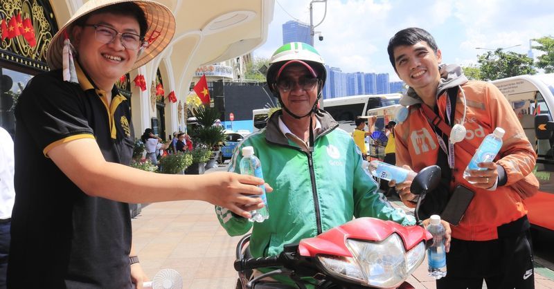
Khi lòng tốt, việc tử tế trở thành một phần của 'phúc lợi' xã hội 🔗 MOI
Tài xế công nghệ ghé nhận nước uống miễn phí giữa trưa nắng - Ảnh: NGỌC SANG Khi lòng tốt được lặp lại mỗi ngày như điều tự nhiên, sự tử tế không còn là điều đặc biệt để ngợi ca, mà trở thành hơi ấm â

Giải mã hiện tượng du khách đổ đến Huế, Đà Nẵng 🔗 MOI
Khu vực đôi bờ sông Hàn (Đà Nẵng) đông nghẹt người vào cao điểm giỗ Tổ Hùng Vương - Ảnh: B.D. Hình ảnh hàng ngàn người ken đặc, chen nhau đi qua Ngọ Môn để tham quan Đại Nội Huế về đêm trở thành khoản

HLV Philippe Troussier: U22 Việt Nam có sức ép 🔗 MOI
Tiền vệ Công Đến (giữa) trên sân tập tại Campuchia chiều 26-4 - Ảnh: N.K. "Chúng tôi có sức ép về mục tiêu tại SEA Games . Chúng tôi có sức ép phải chơi thứ bóng đá tốt nhất của mình.

Xem video siêu phẩm từ giữa sân của Chanathip vào lưới Công An Hà Nội 🔗 MOI
Video Chanathip lập siêu phẩm vào lưới Công An Hà Nội - Nguồn: FPT Play Ở trận đấu này, CLB Công An Hà Nội đã sớm có bàn thắng dẫn trước ở phút 20 nhờ công của Alan. Sau đó, đại diện bóng đá Việt Nam

6 VĐV nghiệp dư được tuyển chọn vào các CLB bóng rổ chuyên nghiệp 🔗 MOI
Các vận động viên Lâm Bình Duy, Nguyễn Thế Đăng và Trần Minh Tiến (từ trái qua) - Ảnh: BTC Sáng 17-4, tại trụ sở Tập đoàn FPT (Hà Nội) diễn ra sự kiện VBA Rookie Draft 2026. Đây là hoạt động cuối cùng

Mùng 3 Tết, Lễ hội xuân Cần Giờ tại Vinhomes Green Paradise đông vui vượt mong đợi 🔗 MOI
Gian hàng ông đồ thu hút nhiều người đến xin chữ đầu năm - Ảnh: VĨNH SƯƠNG Chị Hằng, một cư dân sống ở Cần Giờ (TP.HCM) nhiều năm, chia sẻ chị không nghĩ Lễ hội xuân Cần Giờ lại đông vui đến vậy. “Lễ

'Người Việt nhìn phân khúc để tranh cãi, nhìn giá để mua xe' 🔗 MOI
Omoda C5 SHS-H gây tranh cãi về định vị phân khúc - Ảnh: VĨNH PHÚC Những chiếc xe "xen kẹt" Sự xuất hiện của Omoda C5 SHS-H nhanh chóng làm dấy lên tranh luận xoay quanh việc mẫu xe này thuộc phân khú
🔗 MOI
Tuổi Trẻ Cười xin giới thiệu một số tác phẩm dự thi Cuộc thi vẽ tranh biếm họa 2026, với những đề tài nổi cộm trong xã hội. Tác phẩm dự thi của bạn Hưng Quốc (TP.HCM) Biếm họa dự thi của bạn Khổ (Vĩnh